培训方法 本方文章与审核 竞品提纲与旁注 支柱页逻辑 UB与本方模拟 GEO 最后简表 打印 先把内容写成客户的判断依据 培训目标：产品经理说明客户为什么关心，研发说明作用机制、条件和证据，编辑把这些信息组织成能回答问题、能引导询价的文章。当前生成文章保持不变，特性由产品经理在Excel另行填写确认。
Excel新增三个填写占位 成像、人工复核与图像留存、报告交接仅作为竞品写法参考，供产品经理判断后续如何填写三个占位。当前文章不按这三个方向重写。
本轮Excel已经版本化为ICON-01-3.1，标记“第二次修改模板”。八周计划的模板上架、接收上传和版本提交功能已按最新要求暂停；本页不提供上传完成按钮。
已有内容的三个改法示例（不代表选定产品特性） 本方文章：正文与审核建议分开读 黑色为扩写正文，绿色方括号为待补细节；整段缺失保留起止符号。右侧点评与Excel审核列使用同一份数据。淡蓝框展示拟吸收旧文后的修改示例；绿框是独立内容的内链建议。
1.1 菌落计数仪怎么选：先看平板、菌落和复核需求 当实验室每天需要处理几十到几百块培养皿时，重复观察、逐个计数和整理记录会占用实验员大量时间。选用自动菌落计数仪前，可以先列出每天的样本量、平板类型、接种方法和结果管理要求，再用真实样本判断设备是否适合现有工作。
本文围绕平板适配、菌落识别难点、采图条件及结果复核，说明采购和试用时需要检查什么，并介绍pun-ICON的成像、留图与报告流程。 [产品经理补充：本篇对应的当前可供型号、软硬件配置及公开版本；统一附件图片中ICON-100描述与软件ICON-300显示的关系。]
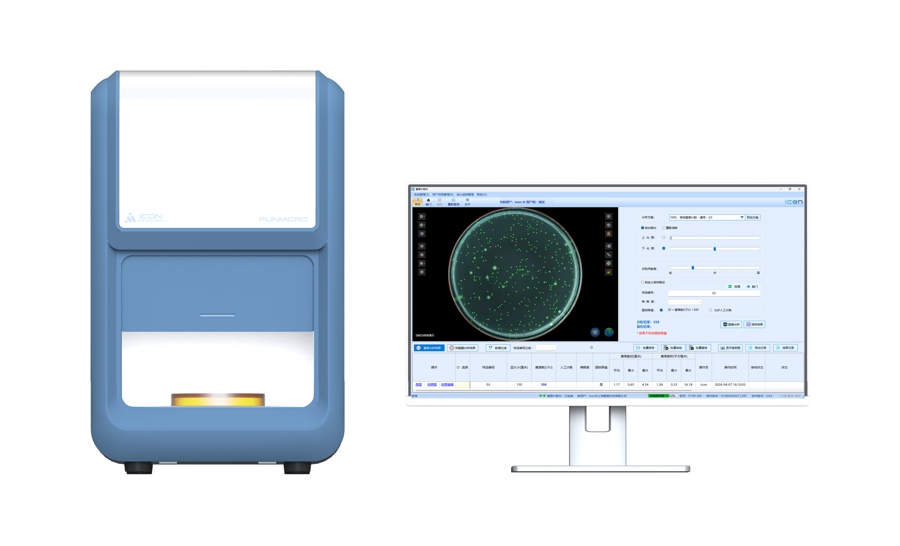
图1 pun-ICON设备与软件界面概览。[产品经理确认型号和版本；当前图含样例演示数据及范围提示，请提供适合公开的原图和独立软件截图。] 建议网页文件名：pun-icon-colony-counter-system-and-software-overview.webp
培训师点评 客户要问：实验室何时需要升级计数方案，读完后应该怎样联系与准备？
现有长处：原稿给出每天几十至几百块的条件场景，并提出降低重复劳动。
后续修订建议（产品经理确认后再执行）：先写“哪些实验室在何种工作中遇到困难”，接三条经确认的核心特性及各自客户价值。正文顺序预告为适配、成像、复核、输出、样本评估。结尾CTA写清准备资料和入口。
补证、责任与表格位置 后续补证清单：型号/版本、真实客户任务、三条经确认特性、咨询或寄样评估入口。
后续责任与验收：产品经理牵头，研发核能力，销售核接收流程。 读者能说清适用人群、经确认的产品价值和下一步；没有未经验证的速度、精度或独有性结论。
Excel位置：I11；扩写列 O11
1.2 仪器首先需要适配哪些平板 把日常样本按培养皿、膜片、测试片等载体分类，并记录各类样本的数量、尺寸和典型菌落范围。倾注、表面涂布及螺旋接种形成的样本呈现不同，试用时应分别准备。还应说明实验室是否需要多人复核、分级权限或审计追踪，让产品配置评估覆盖计数后的工作。
演示用样本应包含实验室经常处理的组合。只看到一张容易计数的平板，难以判断其余载体和接种方法是否适用。 [产品经理与研发补充：确认原稿的‘膜片’具体指哪类载体；哪些型号和配置已验证培养皿、膜片、测试片及各接种方法；逐项注明已验证、待验证或不支持，并给出资料依据。三级权限和审计追踪先作为需求核对，实际功能须单独确认。]
培训师点评 客户要问：设备是否适合我的载体、接种方法、日常工作量和复核要求？
现有长处：原稿已经列样本量、载体、菌落范围、接种方法和数据要求。
后续修订建议（产品经理确认后再执行）：按客户样本组合做需求表，再写已确认适用范围和限制。将成像及样本适用资料用于载体/方法适用性，复核与留图资料用于复核需求，避免把客户要求写成产品已具备功能。
补证、责任与表格位置 后续补证清单：载体定义（含膜片）、样本量与范围、接种方法、对应型号与配置、适配验证资料。
后续责任与验收：产品经理定义范围，研发提供验证记录。 每一种载体和方法有状态、型号、证据及限制；权限/审计需求与已有能力分别标明。
Excel位置：I12；扩写列 O12
延伸阅读：菌落计数准确性的创新解决方案—从连续梯度稀释到智能自动计数。读者遇到密度/杂质差异时，先看上游制样与稀释，不只调整识别参数。
前处理会怎样影响可计数平板
1.3 尺寸合适是否就代表板型兼容 核对尺寸时，还要观察平板能否稳定定位、需要计数的区域是否完整入镜，以及皿壁、皿盖和标签是否遮挡目标。相同直径的平板，也需要结合外形和承载方式检查实际成像。
◆整段待补开始◆ 请产品经理和研发补写pun-ICON的实际板型适配说明：列出对应型号、已验证的平板直径及外形、材质、托盘或适配器名称；分别说明能否放置稳定、完整采图和完成计数。提供平板与托盘实物照片及验证记录，写明限制和未验证组合。现有六张圆形平板小图不能代替尺寸及适配器说明。 ◆整段待补结束◆
[补图：已验证板型与对应托盘或适配器并排拍摄，标注平板尺寸、配置及验证状态。]
建议网页文件名：pun-icon-plate-formats-and-holders.webp
培训师点评 客户要问：培养皿尺寸能放进去，是否也能稳定定位、完整采图和计数？
现有长处：原作者补充了不同位置和形态的菌落，说明关注真实样本。
后续修订建议（产品经理确认后再执行）：保留H10原文但写作时移入困难对象节。本节围绕成像及样本适用资料补“尺寸/形状/材质/托盘—稳定放置—完整入镜—已验证计数”矩阵，再写限制。
补证、责任与表格位置 后续补证清单：W01整段：型号、已验证直径/形状/材质、托盘/适配器名称、实拍和逐项验证记录。
后续责任与验收：产品经理列规格，研发做适配验证，应用工程师拍照。 矩阵与实物图对应，读者能判断自己的平板适用或需先测试；未验证组合明确保留。
Excel位置：I13；扩写列 O13
1.4 培养基颜色和背景会怎样影响读板 培养基中的指示剂可呈现不同颜色，菌落识别需要结合菌落与背景的对比度判断。白色菌落与黄色背景之间可能较容易区分；菌落和培养基颜色接近时，边界与目标特征就需要更仔细地观察。试用时应保留这类低对比样本，检查原图中的目标是否与计数标记一致。
比较不同背景时，应同时提供培养基名称、样本编号、接种方法和人工判读。图像里的颜色用于描述可见外观，具体颜色所代表的微生物学含义应依所用方法确认。 [研发逐图补充：现有六张平板图的培养基与样本身份、原图或标记图类别、红色点等标记含义、采图设备及条件；提供高清原件和公开许可。]
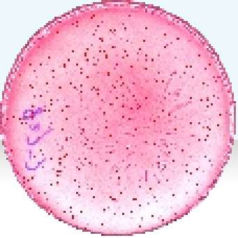
平板候选图1；样本身份和采图条件待确认。 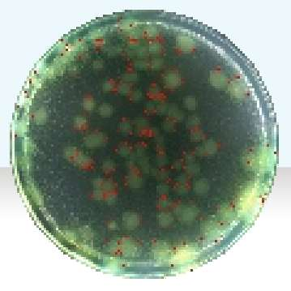
平板候选图2；样本身份和采图条件待确认。 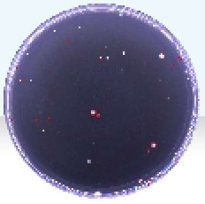
平板候选图3；样本身份和采图条件待确认。 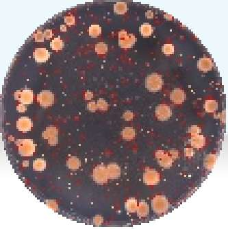
平板候选图4；样本身份和采图条件待确认。 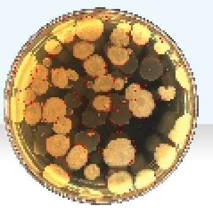
平板候选图5；样本身份和采图条件待确认。 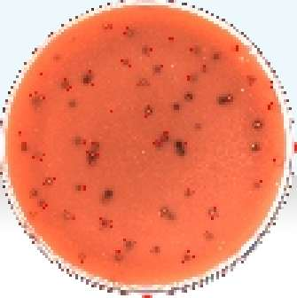
平板候选图6；样本身份和采图条件待确认。 图2 不同背景与外观的平板候选样图。[按a至f填写培养基、样本编号和图层说明。现有图片宽333至359像素，细节展示需补高清原件；图片归属及用途待确认。]
建议网页文件名：pun-icon-colony-counter-plate-examples.webp
培训师点评 客户要问：培养基和菌落颜色接近时，还能保留可判读的边界吗？
现有长处：原稿用颜色和背景差异解释识别难点，已有六张候选平板图。
后续修订建议（产品经理确认后再执行）：将成像及样本适用资料写成同样本背景对比：先指出低对比问题，再放原图/标记图和人工判读。颜色名称只描述画面，生物学意义按实际方法确认。
补证、责任与表格位置 后续补证清单：D03：逐图样本ID、培养基、接种方法、设备/条件、原图或标记图类别、红点含义、高清原件与公开许可。
后续责任与验收：研发核图片条件，应用工程师补图注，产品经理审公开范围。 每图有身份和条件；图注说明本图能证明什么，不能用六张小图认定精度或最小尺寸。
Excel位置：I14；扩写列 O14
1.5 哪些菌落最容易被漏计或误分 同一尺寸培养皿中的目标可能独立、相邻或黏连，也可能位于表面、培养基内部和皿壁附近。边缘目标叠加皿盖、反射或折射后，图像中的边界可能变得不清楚。评估时应选取这些区域，将原图、软件标记和人工判断放在一起核对，记录遗漏、合并及误计的对象。
样本中的颗粒也可能与菌落外观相似，例如未混匀的奶粉颗粒、药渣或其他残留物。是否计入结果，需要实验室明确对象判断依据，并核对软件在实际样本上的处理。 [研发补充：选择真实干扰样本，圈出菌落与非菌落对象，写明人工判断理由、软件初始结果和复核结果；没有验证过的样本保留待验证状态。]
[补图：原始全板图及对应局部，分别标出细小、边缘、黏连目标和杂质；配人工判断，避免仅展示最终计数值。]
建议网页文件名：pun-icon-challenging-colonies-close-up.webp
培训师点评 客户要问：边缘、黏连、低对比和杂质怎样影响结果，客户该如何复核？
现有长处：原稿具体列出独立、黏连、蔓延、边缘、表面/内部及奶粉颗粒、药渣等。
后续修订建议（产品经理确认后再执行）：以成像及样本适用资料指出困难位置/干扰，接复核与留图资料展示如何找出和处理差异。选正常与困难对象各一例，形成“问题—证据—操作—结果/限制”的段落。
补证、责任与表格位置 后续补证清单：D04：本方真实干扰样本全图和局部，圈出目标/非目标，人工判断理由、软件初始/复核计数和差异原因。
后续责任与验收：应用工程师和实验室确定人工参考，研发核软件处理。 同板、同条件、同一ID的对照可追溯；不把杂质排除写成所有样本均准确。
Excel位置：I15；扩写列 O15
延伸阅读：如何利用菌落计数器的标记与分类功能进行突变菌落筛选？。只有需要按颜色/大小等表型筛选的科研用户才展开；表型不等于基因型鉴定。（仅在相应情境需要时阅读，不作为已交付能力。）
按外观标记与分类的科研筛选任务
延伸阅读：菌落计数器在环境水质检测场景中的适配性说明。提供复杂水样与严重融合/低对比等限制，有助选择代表样本；按方法与型号核实。
水样平板的杂质、平行样和判读边界
1.6 需要识别的最小菌落是否清楚可见 pun-ICON采用2000万像素相机， [产品经理确认对应型号、相机配置及受控规格；研发确认这里指传感器有效像素还是输出图像像素。] 观察细小菌落时，还需要把成像范围、对焦、对比度和相邻对象之间的间隔一起检查。像素数本身不能给出可靠计数的最小菌落尺寸。
可以从客户实际需要计数的最小对象入手，保留全板原图，再放大对应局部，观察轮廓和间隔是否足以支持人工确认及软件分析。 [研发补充：带比例依据的原始图、最小目标的实测尺寸和人工参考结果；如需给出最小识别范围，须同时列测试条件、配置及限制，未取得数据时不填参数。]
培训师点评 客户要问：2000万像素对客户实际最小对象有何帮助，什么条件下可靠？
现有长处：原稿提供了2000万像素这个产品配置线索。
后续修订建议（产品经理确认后再执行）：将成像及样本适用资料写为“配置—能看清的具体细节—同板验证—适用限制”。保留像素事实来源并待确认，不从像素数推出最小尺寸或准确率。
补证、责任与表格位置 后续补证清单：D05/D06：受控规格及型号/版本；全板原图、带比例局部、目标实测尺寸、人工参考、对焦/对比度/间距条件。
后续责任与验收：产品经理核受控规格，研发提供原始成像与测试。 规格与图片一致；最小尺寸若无完整测试则不填，读者看到可检查条件而非单一大参数。
Excel位置：I16；扩写列 O16
延伸阅读：深入探讨菌落计数器的校准与维护方法。把尺寸/成像基准和计数功能验证分开，并给出需记录的材料；仅为唯一维护入口。
校准、计数功能验证与维护记录
1.7 菌落接触或重叠时应怎样复核 轻度接触、重度黏连和片状蔓延应分别观察，按实验室适用的检测方法与操作规程确定计数和复核方式。边界不清时，保留原图、标记图及人工意见，有助于确认争议对象如何处理。 [技术审核人补充：实际采用的标准或方法编号、版本、条款、适用样本及SOP规则。GB 4789.2—2022针对食品菌落总数，片状与链状生长有具体条件，不能概括成所有重叠均算一个或所有蔓延均排除。]
试用时应保留自动初始计数、人工复核后的计数和修改原因，查看软件提供哪些修改动作，以及修改前后的结果如何对应。 [研发补充：同一样本的实际复核截图或录屏、操作动作、软件版本与结果记录；自动拆分或其他处理能力只写已验证功能。]
培训师点评 客户要问：接触、重叠和蔓延菌落依据什么规则判读，如何保留争议？
现有长处：原稿注意到黏连与蔓延处理，并提到人工复核。
后续修订建议（产品经理确认后再执行）：用复核与留图资料组织“适用方法与SOP—自动初始标记—人工复核—差异原因”。将原文规则改为经技术审核的限定表述，不给所有接触或蔓延统一结论。
补证、责任与表格位置 后续补证清单：D07/D08：实际标准编号/版本/条款/样本与SOP；同板复核截图或录屏、动作、修改前后计数、原因与软件版本。
后续责任与验收：技术审核人确认方法，研发和应用工程师确认操作。 规则适用范围写清，原图/标记/人工意见关联；自动拆分等只写已确认能力。
Excel位置：I17；扩写列 O17
1.8 成像是否保留了计数所需的细节 pun-ICON采用自动曝光，系统根据样本状态调整曝光，减少操作者逐板设置的步骤。 [研发确认自动调节的具体参数、适用型号与采图模式、软件版本，以及是否允许手动覆盖和哪些样本需要额外处理。] 演示时应同时查看常规平板和困难平板，观察细小目标、黏连边界及低对比区域是否仍然可见。
成像评估需要保留原图和采图记录。自动曝光如何工作、图像是否适于判读，以及计数结果与人工参考是否一致，应分别记录，方便追查出现差异的位置。
培训师点评 客户要问：自动曝光减少了哪些设置工作，何种样本仍要额外处理？
现有长处：原稿明确提出自动曝光及减少逐板调节的操作价值。
后续修订建议（产品经理确认后再执行）：围绕成像及样本适用资料说明“操作者要做什么、系统实际调整什么、图像是否仍可判读”，用复核与留图资料保留原图和参考结果，避免把便利性直接写成准确率。
补证、责任与表格位置 后续补证清单：D09：对应型号/软件版本、调节参数和模式、是否可手动覆盖；常规及困难样本的采图记录和人工参考。
后续责任与验收：研发解释机制和限制，应用工程师记录真实流程。 能复述少了哪一步和仍需检查哪一步；样例可看清细小、黏连和低对比对象。
Excel位置：I18；扩写列 O18
1.9 照明不均和反光会造成什么判断问题 光源的位置、覆盖范围及与平板的距离会影响图像中的亮暗分布。表面生长的菌落、皿壁和皿盖产生的反光，也可能影响局部边界的观察。检查时应关注目标所在区域，记录亮斑或暗部是否遮挡了需要计数的对象。
◆整段待补开始◆ 请研发补写pun-ICON实际照明与采图说明：确认使用的光源位置、可调方式及与样本相关的设置；提供同一平板在相关条件下的原图与局部对照，记录曝光、皿盖状态和分析参数，并说明观察到的差异及适用限制。附可公开的本方结构示意或实拍图，不使用SphereFlash球形漫射罩示意代表本方光学结构。 ◆整段待补结束◆
[补图：同板采图条件对照及相同位置的局部。注明每幅图的照明、曝光和分析设置；若无有效对照，展示原图并缩小结论。]
建议网页文件名：pun-icon-plate-imaging-lighting-exposure.webp
培训师点评 客户要问：照明不均、反光或皿盖会遮挡哪些对象，如何用本方图解释？
现有长处：原稿已经指出顶/底光、距离、照度与反射问题。
后续修订建议（产品经理确认后再执行）：将成像及样本适用资料放在具体图像问题之后，写本方实际设置及其用途。以同一平板的原图和局部对照说明观察差异，再给限制。
补证、责任与表格位置 后续补证清单：W02整段：本方光源位置/调节方式、结构示意或实拍；同板条件、曝光、皿盖状态、分析参数、原图和观察结论。
后续责任与验收：研发提供结构/设置，应用工程师完成同板拍摄。 对照控制条件明确，图只证明被观察的差异，不编光学专利、独有结构或精度。
Excel位置：I19；扩写列 O19
1.10 颜色和曝光是否改变了菌落边界 颜色与曝光可以结合培养基背景和照明测试一起检查。关注菌落轮廓、相邻目标间的间隔，以及亮部和暗部的细节是否保留。图像变亮或颜色更鲜艳时，仍应回到原图和人工参考，确认需要计数的对象是否清楚可辨。 [研发补充：本方正常采图与过曝、偏色或低对比情况的真实例图及观察结论；标明对照如何产生，可与上一节共用同一组原件，避免重复制作。]
培训师点评 客户要问：画面更亮或颜色更鲜艳，是否保留了计数所需的边界？
现有长处：原作者已经把颜色和曝光指回相关章节，避免重复。
后续修订建议（产品经理确认后再执行）：用两段短文收束成像及样本适用资料：曝光/颜色变化如何影响轮廓和间隔；再回到原图与人工参考。素材与上一节共用，不重复拍同一证据。
补证、责任与表格位置 后续补证清单：D10：本方正常与过曝/偏色/低对比例图，说明对照产生方式和条件；若只有一种真实状态，不虚构其他效果。
后续责任与验收：应用工程师采图，研发解释观察，技术审核判读。 本节能独立回答问题；引用共用样本ID，图注清楚，不以更亮等同更准。
Excel位置：I20；扩写列 O20
1.11 结果生成后能否复核 留存和使用 需要双人复核的实验室，可以把原图、自动计数结果和复核动作一并纳入演示。pun-ICON会保存计数前和计数后的图像；有相应权限的用户可以复核并修改结果，修改后再保存第三张图像。 [研发补充：三类图像各自定义、保存时机和检索方式，是否保留原始版本，以及修改前后结果如何关联样本编号；提供实际文件或连续录屏。]
评估时可由不同角色走完采图、查看标记、修改、复核和调取记录的过程，确认实验员与复核人员分别能做什么。若实验室提出审计追踪要求，还应单独核查修改者、时间和修改原因等记录。 [产品经理确认：实际权限角色、软件版本、标准配置或选配及功能限制。图像留存、分级权限和审计追踪分别说明，不能互相代替。]
[补图或视频：同一样本的原图、自动标记图和修改后图，配一次实际复核动作及保存记录。现有设备加电脑组合图仅用于概览。]
建议网页文件名：pun-icon-colony-count-review-image-records.webp
培训师点评 客户要问：别人能否复核这次结果，三张图分别是什么并怎样找回来？
现有长处：原稿给出计数前、计数后、复核后第三图及按权限修改。
后续修订建议（产品经理确认后再执行）：以复核与留图资料作本节主线：同样本连续走完采图、初始标记、修改、复核、保存和重新调取；输出与交接资料接交接文件。每步说明操作者与留下的记录。
补证、责任与表格位置 后续补证清单：D11/D12：三图定义与检索、原始版本是否保留、样本ID关联、实际权限/标准或选配/软件版本；录屏及真实文件。
后续责任与验收：研发演示流程，产品经理核权限配置，实验室复核可用性。 可用同一ID重新打开三图与计数；审计追踪单独核修改者/时间/原因，不做合规替代推断。
Excel位置：I21；扩写列 O21
1.12 需要导出哪些文件和记录 pun-ICON计数后可生成带图片的报告及表格形式的报表，并提供PDF、Excel和Word相关输出。 [产品经理与研发澄清：三种格式分别是完整报告、数据报表还是图像相关输出；逐项填写实际扩展名、内容、软件版本及是否需要选配，并提供可打开的原始样张。]
请在演示中实际打开导出的文件，检查样本编号、计数值、原图和标记图是否对应，复核信息是否满足交接要求。需要导入现有数据系统时，应另列字段与接口需求，并确认实际可提供的方式。 [补充脱敏报告截图及字段说明，确认公开许可；未验证的CSV、系统接口或LIMS功能保持待确认，不补作已有能力。]
[补图：本方实际导出的脱敏报告或数据文件截图，标明格式、字段、对应样本与软件版本。]
建议网页文件名：pun-icon-colony-count-report-example.webp
培训师点评 客户要问：导出的PDF、Excel、Word分别包含什么，接收人能直接使用吗？
现有长处：原稿给出了报告/表格和三种格式，是输出与交接资料的明确线索。
后续修订建议（产品经理确认后再执行）：将输出与交接资料写成“客户要交付什么—各格式提供什么—打开文件核对—交接限制”。复核与留图资料说明原图/复核如何关联，不补未验证CSV、API或LIMS。
补证、责任与表格位置 后续补证清单：D13/D14：逐格式扩展名与内容、样本ID/计数/图片/复核字段、标准或选配及版本；可打开原件、脱敏截图和公开许可。
后续责任与验收：产品经理核输出清单，研发出原件，应用工程师验证接收流程。 三种文件均实际打开并核字段；不同格式的能力各自说明，不把格式名称当完整数据完整性证明。
Excel位置：I22；扩写列 O22
1.13 一次有用的试用需要带哪些代表样本 pun-ICON试用可围绕三类样本安排。先用实验室日常产生的样本检查常规流程，再将平时保留的复杂样本集中评估。需要进一步测试时，可按菌种、密度和干扰因素准备样本，并记录准备目的和条件。每个样本都将设备结果与约定的人工复核结果对应，记录差异和判断原因。 [研发与实验室共同补充：各组样本数量与选择依据、人工参考计数程序、分歧处理人、接受标准及需要交付的图像和文件；在试用前确认，不能用演示后选出的结果代替。]
◆整段待补开始◆ 请补一段可公开的代表性试用记录，说明客户任务或匿名实验室背景、设备型号与版本、样本分组、人工复核方法，以及一项正常结果和一项存在差异的结果。对差异写明原因、处理和限制，并附原图、标记图或报告。若尚无真实试用记录，保留本段待补状态，正文不写准确率、节省时间或已通过验收。 ◆整段待补结束◆
准备咨询pun-ICON时，可先整理平板与培养基信息、日常工作量、困难样本原图和结果记录要求，便于确定评估范围及适合核对的配置。 [产品经理补充：实际可用的咨询或样本评估入口、接收方式、需要提交的资料，以及本篇作者、技术审核人和确认日期。]
培训师点评 客户要问：试用前要准备哪些样本，什么结果才算满足需求并值得询价？
现有长处：原稿已有常规、保留困难、专门准备的三类样本和人工对比。
后续修订建议（产品经理确认后再执行）：用样本适用、复核与交接检查贯穿同一次评估：样本适用→图像与复核→导出交接。先约定样本与接受条件，再保留正常和差异结果。吸收旧文190的全生命周期成本、培训维护和支持检查项，在试用与咨询收尾前加简短采购检查段。168/184/190同选型意图并入，不互相推荐。
补证、责任与表格位置 后续补证清单：D15/D16/W03：样本分组、人工参考与分歧程序、预定接受标准；型号/版本、原图/标记/复核/报告、完整耗时、限制、真实咨询入口及署名；具体价格/培训/耗材/校准/升级/售后范围仍待产品补。
后续责任与验收：产品经理组织，研发/应用工程师/实验室共同验证，销售核评估接收。 结果可重建且包含差异样本；无数据不写精度、节时或通过验收；采购段列检查项而非服务承诺，不能称新稿全面优于旧文；CTA列清资料与下一步。
Excel位置：I23；扩写列 O23
延伸阅读：自动菌落计数仪与培养皿自动连线的全流程自动化设计。批量客户还需要核对输送定位、信号时序、样本关联与异常恢复；该页仅方案参考。（仅在相应情境需要时阅读，不作为已交付能力。）
高通量连线的上样、扫码与异常处理
下轮融合建议（仅在审核列反馈）：190已有全生命周期成本、培训、维护和应用支持检查项，可在未来定稿时提炼；本轮不向生成文章追加段落。具体服务范围、费用和承诺仍由产品经理确认。
190：全生命周期成本与供应商
竞品阅读：先提纲，再判断，再看中文内容 每页先列原文URL和整理提纲，再说明长处与不足；正文和培训备注分栏。多篇内容组逐页编号，不把产品支柱和技术文章混作一篇。
范围说明：原工作簿只有题名、URL、小节定位及英文转述，没有竞品原文全文。本页完整译出附件转述，并对公开页面提供逐节中文摘要；没有将摘要标成全文译本。
2.1 IUL选型 结合产品与板型说明（3篇／页） 选型文→产品页、板型文→产品页的实际链接已核实；选型文canonical也指向产品。未观察到三页双向互链，不能叫完整hub结构。
本组阅读提纲 2.1.1 选择自动菌落计数仪前需要考虑的五个问题 https://iul-instruments.com/the-5-points-to-consider-when-choosing-an-automatic-colony-counter/
中文内容范围：逐节摘要；配图及主要标签保留原位置关系。
整理提纲 实验室需要判断的问题 实验室选择自动计数设备前，要确认成像、板型、菌落处理、数据输出和后续分析任务。
照明结构与成像 SphereFlash产品说明介绍球形漫射罩照明结构。
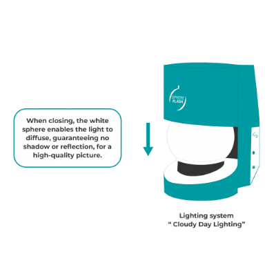
SphereFlash照明罩示意。可借鉴原理图的表达方式，不能据此描述pun-ICON光路。 图中主要文字：图中主要文字中译：合盖时，白色球形罩使光扩散，以获得厂商所述的无阴影、无反光图像。Lighting system “Cloudy Day Lighting”＝“阴天照明”系统。这里保留的是竞品自己的宣传表述。
复杂背景与图像处理 复杂背景部分展示采集图和处理后的标记图。
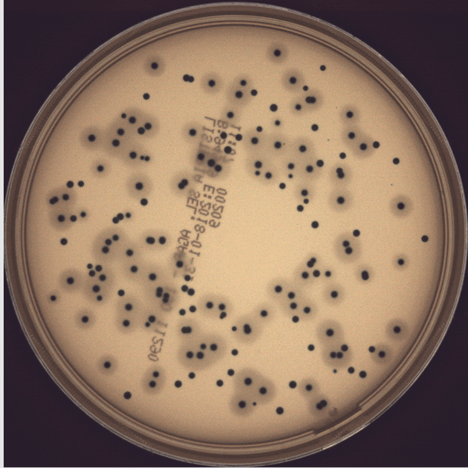
采集图：可见平板菌落和盘底印字。从正文已经公开的原图链接打开后截图，768×768；没有下载原图文件。 图中主要文字：原图标签Captured picture＝采集图。盘底批号不是正文说明，本次未转写为样本身份。
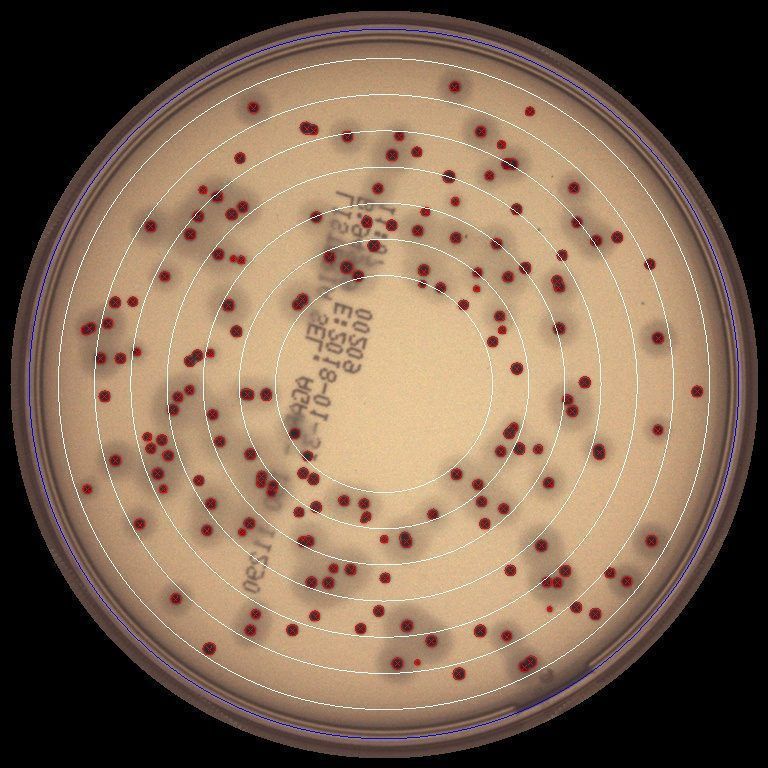
处理后图：红色标记和同心区域叠加于平板图上。页面缩略资源失效，但正文公开原图链接可读取；本次从该原图链接打开后截图，768×768。 图中主要文字：原图标签Processed picture＝处理后图。画面没有足以确认完整操作参数的说明；不由标记数量推导准确率。
平板与培养介质 培养介质、板型及尺寸分别说明，并展示多种样本形式。
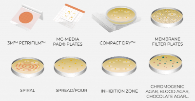
八类平板或接种/介质形式的示意拼图，放在原文培养介质小节之后。 图中主要文字：图内标签中译：3M Petrifilm测试片、MC-Media Pad测试片、Compact Dry测试片、滤膜平板、螺旋接种、涂布/倾注、抑菌圈、显色/血/巧克力琼脂等。品牌名称保留。
结果导出与软件版本 结果管理部分介绍软件版本与可选能力。
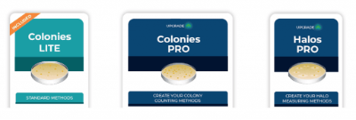
软件版本卡片：Colonies LITE、Colonies PRO、Halos PRO。该图不展示导出的文件内容。 图中主要文字：图内主要文字中译：Included＝包含；Upgrade＝升级；Standard methods＝标准方法；Create your own colonies counting methods＝建立自定义菌落计数方法；Create your halos measuring methods＝建立自定义抑菌圈测量方法。
视频与演示请求 结尾提供产品视频和定制演示入口。
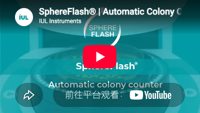
产品视频封面及播放器入口；未播放、未取字幕，不描述片内镜头或时长。 图中主要文字：视频标题中译：IUL的SphereFlash自动菌落计数仪与抑菌圈读取仪。
视频仅为封面或入口，本轮未播放或取得字幕。
2.1.2 SphereFlash自动菌落计数仪 产品承接页 https://iul-instruments.com/product/sphereflash-automatic-colony-counter/
中文内容范围：逐节摘要；配图及主要标签保留原位置关系。
整理提纲 产品与成像结构 产品页开头介绍SphereFlash及其移动球形罩照明，配整机、软件和承载区相册。它是型号采购入口，和选型文章的提问结构不同。
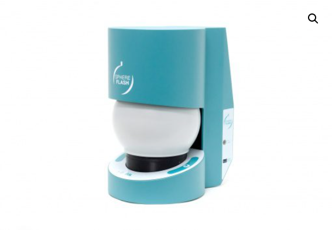
SphereFlash整机主图。用于辨认设备外观，不代表本方设备，也不能证明厂商效果主张。 图中主要文字：仅保留品牌SphereFlash；未从图片推断型号配置或性能。
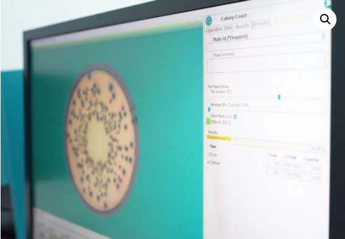
软件显示器照片，显示平板图像与计数界面。截图只保留界面场景，不据此核定完整功能和输出。 图中主要文字：可读主题为菌落计数；缩小的菜单与结果微字未逐字转写，用户阅读时以此说明为边界。
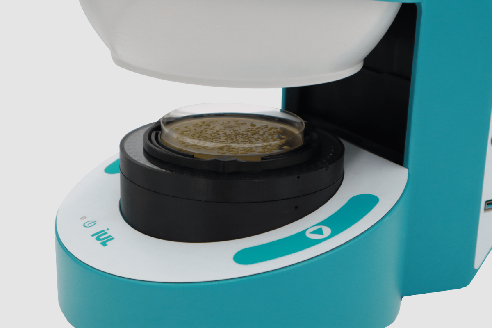
通过同页公开原图链接打开后截取，展示平板承载区与球形罩局部。只是结构外观，不等于照明效果实测。 图中主要文字：IUL品牌保留，图中没有需全文翻译的正文说明。
主要功能与演示 主要卖点涵盖一键计数、菌落类型、照明、审计及报告，再提供演示。相关性能属于厂商说明，不是本次测试结论。
与选型文相同的视频，复用相同官方视频的既有封面截图，不重复存文件；未播放。 查看前面相同的截图
图中主要文字：SphereFlash自动菌落计数与抑菌圈读取仪。
视频仅为封面或入口，本轮未播放或取得字幕。
软件版本与许可 软件部分区分AI、LITE、PRO和Halos任务，并说明部分版本的互联网与许可条件。版本矩阵有助于区分包含和升级项。
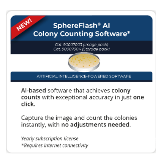
AI软件卡片与许可提示。此处记录竞品自己的说明，不将其当作准确率测试。 图中主要文字：图内要点中译：SphereFlash AI菌落计数软件；基于人工智能的软件；厂商称一键采图计数且无需调整；年度订阅许可；需要互联网连接；分别列图像包和存储包。
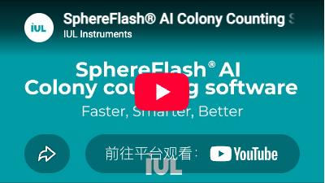
AI软件演示视频的封面和入口，未播放。 图中主要文字：SphereFlash AI菌落计数软件。封面宣传词不作为速度或准确率验证。
视频仅为封面或入口，本轮未播放或取得字幕。
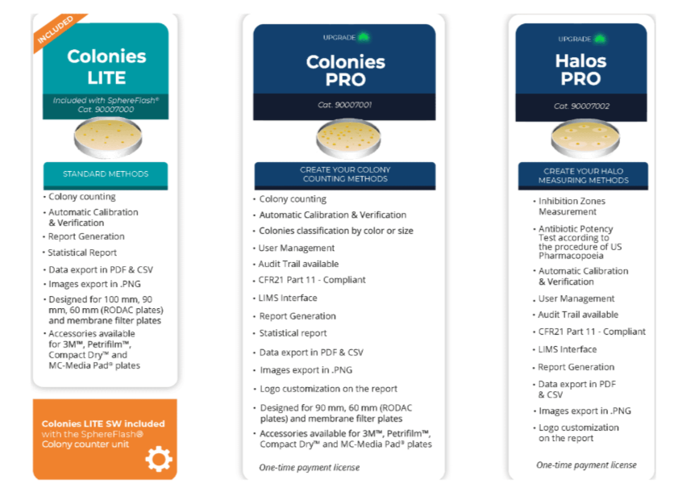
软件版本功能卡片，把菌落计数与抑菌圈任务、配置和许可分开。功能与法规表述均为厂商主张。 图中主要文字：主要标签中译：LITE随设备包含，列标准菌落计数、自动校准验证、报告/统计、PDF/CSV及PNG导出、板型和适配器。Colonies PRO为升级项，增加颜色/大小分类、用户管理、审计记录、21 CFR Part 11声明、LIMS、报告标识定制，标一次性许可。Halos PRO为抑菌圈测量及效价分析，另列校准、用户管理、审计与报告等。详细条目以原图及官方当前规格为准，未把卡片声明当合规验收。
订货 适配器与电脑要求 后续列订货编号、定位器和特殊载体适配器、资料下载、硬件和操作系统要求，使采购问题可追到具体配置。未逐页查验下载资料。
安装运行确认与校准支持 末段视频按安装确认、运行确认、两类软件校准分主题。这里只查看入口封面，不能据此认定验证程序或法规符合性已经通过。
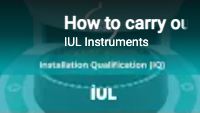
安装确认视频封面，未播放、未验证操作内容。 图中主要文字：安装确认 IQ；视频主题是怎样进行SphereFlash安装确认。
视频仅为封面或入口，本轮未播放或取得字幕。
运行确认视频封面，未播放、未验证操作内容。 图中主要文字：运行确认 OQ；视频主题是怎样进行SphereFlash运行确认。
视频仅为封面或入口，本轮未播放或取得字幕。
Halos PRO校准和核查视频封面，未播放。 图中主要文字：怎样校准和核查SphereFlash Halos PRO软件。
视频仅为封面或入口，本轮未播放或取得字幕。
Colonies LITE与PRO校准和核查视频封面，未播放。 图中主要文字：怎样校准和核查SphereFlash Colonies LITE与PRO软件。
视频仅为封面或入口，本轮未播放或取得字幕。
2.1.3 不同琼脂平板的读取与适配 专题补充页 https://iul-instruments.com/reading-different-types-of-agar-plates-with-an-automatic-colony-counter/
中文内容范围：逐节摘要；配图及主要标签保留原位置关系。
整理提纲 数字辅助与自动计数 导语先区分数字辅助计数和自动计数，再把日常工作引到平板适配。文中举出的设备速度属于厂商示例，不是方法或行业通用指标。
培养基颜色与外观 文章列不同培养基和颜色背景，拼图集中展示若干载体与接种形式。培养基用途与颜色判读仍需相应实验方法支持。
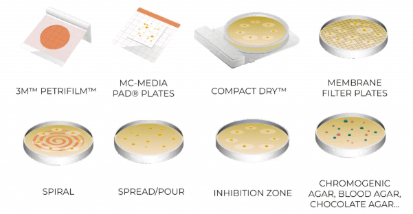
与选型文中相同的八类形式拼图；本次在板型文章原位另截，确认位置。 图中主要文字：标签中译：3M Petrifilm、MC-Media Pad、Compact Dry、滤膜平板、螺旋接种、涂布/倾注、抑菌圈，以及显色/血/巧克力琼脂等。品牌名保留。
板型尺寸和定位适配 随后说明不同直径、接触皿、滤膜与测试片需要定位器或适配器。此处能补充一般选型问题，但列举范围只属于SphereFlash声明。
分类 复杂背景与记录 软件说明配分类结果表和四象限图，讨论颜色/直径、螺旋分布、复杂背景和重叠对象，并提到追溯及导出。图例不代替完整验证数据。
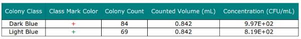
示例分类结果表。图中样例数值不能转作任何设备准确率或方法的接受标准。 图中主要文字：表头：菌落类别、类别标记颜色、菌落数、计数体积mL、浓度CFU/mL。深蓝类：84、0.842、9.97E+02；浅蓝类：69、0.842、8.19E+02。加号标记颜色仅是图内类别标识。
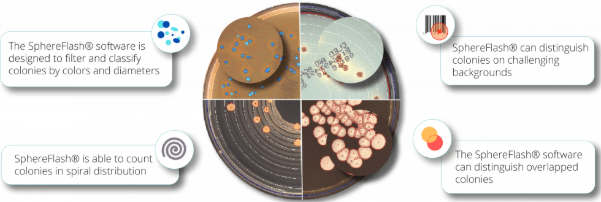
四象限示例，将颜色/尺寸、复杂背景、螺旋分布和重叠菌落放在一张图中。属于厂商展示，缺完整样本和验证方案，不能当本方事实。 图中主要文字：四角说明中译：按颜色和直径筛选分类；在复杂背景下区分菌落；计数螺旋分布的菌落；区分重叠菌落。
产品与演示承接 正文直接链接SphereFlash产品页，并链接另一篇追溯主题文章，结尾进入演示联系入口。本次未继续抓取追溯文章。
2.2 Singer计数指南 成像产品与工作流组（4篇／页） 本次合并4页：主指南→VOGUE链接已核实；工作流文CTA另到use-case页面。成像文补技术，不假称全部组内互链。
本组阅读提纲 2.2.1 菌落计数看得清 现代菌落计数方案指南 https://www.singerinstruments.com/resource/counting-made-clear/
中文内容范围：逐节摘要；配图及主要标签保留原位置关系。
整理提纲 导言 说明自动计数需要可复核的图像输入。
[媒体待补：光源与网格辅助计数。。原站或原媒体403，未取得像素。]
计算机视觉与图像处理 区分低层、高层、统计和神经网络方法。
[媒体待补：卷积与边缘检测示例。。原站或原媒体403，未取得像素。]
[媒体待补：另一种边缘检测示例。。原站或原媒体403，未取得像素。]
[媒体待补：人脸与姿态识别示例。。原站或原媒体403，未取得像素。]
[媒体待补：多种神经网络应用示例。。原站或原媒体403，未取得像素。]
[媒体待补：抑菌圈图像处理示例。。原站或原媒体403，未取得像素。]
[媒体待补：人脸特征筛选示例。。原站或原媒体403，未取得像素。]
[媒体待补：水样平板的菌落检测示例。。原站或原媒体403，未取得像素。]
计数技术的发展 回顾辅助工具、自动成像及算法的演进。
选择适合需求的方案 检查分辨率、对比度、反光及色彩一致性。
下一步 引导读者了解ColonyCam VOGUE。
2.2.2 ColonyCam VOGUE平板成像与分析系统 https://www.singerinstruments.com/solution/colonycam/
中文内容范围：逐节摘要；配图及主要标签保留原位置关系。
整理提纲 图像与分析 展示成像及PhenoSuite筛选表达。
对应媒体与缺图位置 [媒体待补：原文此处有媒体，浏览器访问受限，截图待取得。。原站或原媒体403，未取得像素。]
[媒体待补：原文此处有媒体，浏览器访问受限，截图待取得。。原站或原媒体403，未取得像素。]
[媒体待补：原文此处有媒体，浏览器访问受限，截图待取得。。原站或原媒体403，未取得像素。]
[媒体待补：原文此处有媒体，浏览器访问受限，截图待取得。。原站或原媒体403，未取得像素。]
[媒体待补：原文此处有媒体，浏览器访问受限，截图待取得。。原站或原媒体403，未取得像素。]
[媒体待补：原文此处有媒体，浏览器访问受限，截图待取得。。原站或原媒体403，未取得像素。]
[媒体待补：原文此处有媒体，浏览器访问受限，截图待取得。。原站或原媒体403，未取得像素。]
[媒体待补：原文此处有媒体，浏览器访问受限，截图待取得。。原站或原媒体403，未取得像素。]
2.2.3 自动化如何改进菌落计数流程 https://www.singerinstruments.com/resource/how-automation-can-enhance-your-colony-counting-workflows/
中文内容范围：逐节摘要；配图及主要标签保留原位置关系。
整理提纲 人工与半自动 比较人工判断与辅助工具。
[媒体待补：半自动计数辅助设备的对照。。原站或原媒体403，未取得像素。]
2.2.4 图像质量怎样影响数据可靠性 https://www.singerinstruments.com/resource/high-image-quality-the-key-to-accurate-data-and-reliable-results/
中文内容范围：逐节摘要；配图及主要标签保留原位置关系。
整理提纲 图像是分析的输入 图像是自动分析的输入，采图时应保留后续判断需要的信息。
[媒体待补：[待补图：原文此处有不同成像设备的图像对照；本次原图和官方768px备选均返回403，未取得可用截图。请提供有权使用的该图截图或继续保留原文链接。]。原站或原媒体403，未取得像素。]
图中主要文字：图注主要意思：同一批菌落，不同成像设备。
照明均匀性 不均匀照明影响表观颜色、强度与边界；文中比较图像及ImageJ结果。
[媒体待补：[待补图：原文此处有照明与ImageJ分析前后对照；资源403，无法核验实际像素或计数对象。]。原站或原媒体403，未取得像素。]
图中主要文字：图注说明同一菌落图像在上、分析结果在下，分析设置相同但相机不同。该说明来自可读图注，未替代看图。
颜色与分辨率 颜色保真帮助表型区分，分辨率与对比度影响纹理和相邻对象的可见性。
[媒体待补：[待补图：原文此处为高低分辨率纹理对照；资源403，未取得可用截图。]。原站或原媒体403，未取得像素。]
图中主要文字：图注主要意思：部分菌落皱褶很细小，分辨率影响可见细节。
曝光与饱和 过曝和饱和可能丢失亮部细节，并影响阈值分割。
[媒体待补：[待补图：原文此处有猴头菇菌丝过曝对照；资源403，不能以本方平板图替代。]。原站或原媒体403，未取得像素。]
图中主要文字：图注将左图标为过曝猴头菇菌丝；未实际看到原图像素。
清晰图像与产品入口 结尾连接图像分析资料及ColonyCam VOGUE产品。
[媒体待补：[待补图：原文此处列科研期刊封面示例；资源403。此类封面仅说明科研图像的展示用途，不证明设备能带来发表结果。]。原站或原媒体403，未取得像素。]
图中主要文字：图注标示Nature Microbiology的若干期次；非本方发表案例。
2.3 DWS自动计数介绍与ProtoCOL产品组（2篇／页） 短推广页直链ProtoCOL3 Plus型号页；主文未直链AutoCOL，因此AutoCOL仅列已发现候选，不假称本组必须完整承接。
本组阅读提纲 2.3.1 是时候更新菌落计数系统 走向自动化 https://www.dwscientific.com/automated-colony-counting
中文内容范围：逐节摘要；配图及主要标签保留原位置关系。
整理提纲 产品定位与成像 页面介绍ProtoCOL 3 Plus计数与抑菌圈读取系统，并强调相机与LED照明。
适配范围与可选任务 产品说明涉及平板、遮光、细小目标、电子数据及可选分析。
从推广页进入产品与演示 结尾链接具体型号并提供演示联系入口。
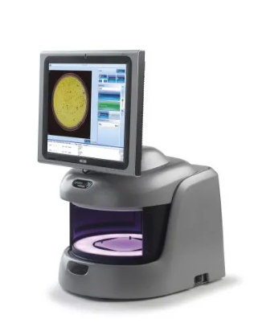
推广页中的ProtoCOL整机与屏幕示意。可参考设备和软件组合呈现；不能据此验证计数性能或本方功能。 图中主要文字：画面品牌/型号保留ProtoCOL。软件界面缩小微字未逐字转写，不作为配置、数据或菜单功能证据。
2.3.2 ProtoCOL3 Plus 自动菌落计数与抑菌圈读取系统 https://www.dwscientific.com/colony-countingzone-reading/protocol3-plus
中文内容范围：逐节摘要；配图及主要标签保留原位置关系。
整理提纲 型号与系统组成 型号页展示主机、平板托位和分析软件。
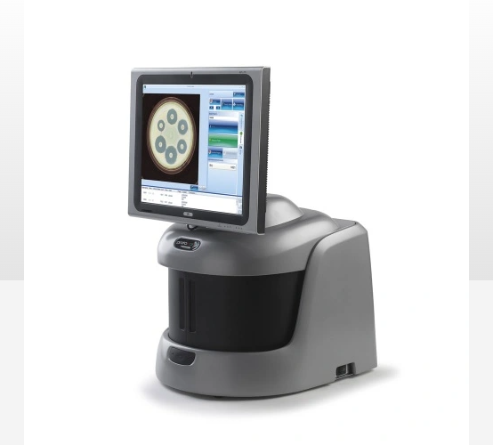
产品页的系统主图，屏幕示例含抑菌圈图像。该画面可说明整机与屏幕位置，不能当作pun-ICON图像或可供功能。 图中主要文字：品牌/型号ProtoCOL保留。屏幕软件微字未逐字转写；图上分析内容仅作界面示例。
成像与样本适应的厂商说明 成像说明涉及照明、目标识别及样本适应。
规格 选配与资料 页面提供规格、选配、适配器与资料下载。
相册与视频入口 相册与视频入口展示产品、验证或校准相关内容。
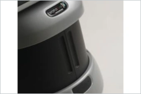
机身前部与遮光门区域局部图。只是结构外观，未验证遮光性能。 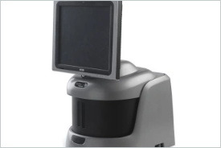
另一外观图，显示触屏与机身。与主图属同一产品呈现，不重复计作独立测试证据。 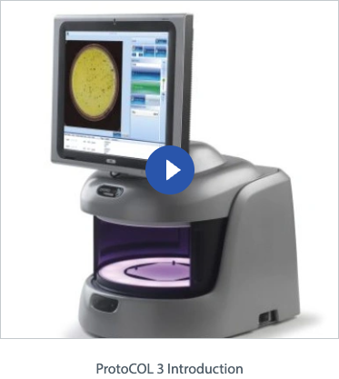
视频封面与入口，未播放。 图中主要文字：ProtoCOL 3 Introduction＝ProtoCOL 3产品介绍。
视频仅为封面或入口，本轮未播放或取得字幕。
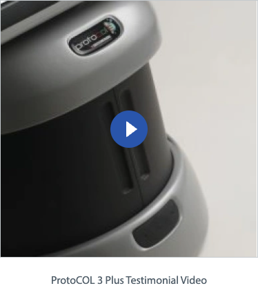
用户评价视频封面与入口，未播放；不根据封面推断客户结果。 图中主要文字：ProtoCOL 3 Plus Testimonial Video＝ProtoCOL 3 Plus用户评价视频。
视频仅为封面或入口，本轮未播放或取得字幕。
2.4 Ossila方法 排障与计数产品组（3篇／页） 方法文和排障文相互补充，产品页提供规格、软件及报告样例入口；须按实际产品页理解，不能只把方法文中的人工计数器图当现售自动产品能力。
本组阅读提纲 2.4.1 菌落计数方法 实践建议与人工自动比较 https://www.ossila.com/pages/colony-counting
中文内容范围：逐节摘要；配图及主要标签保留原位置关系。
整理提纲 菌落计数的步骤 流程依次涉及取样、稀释、接种、培养和计数。
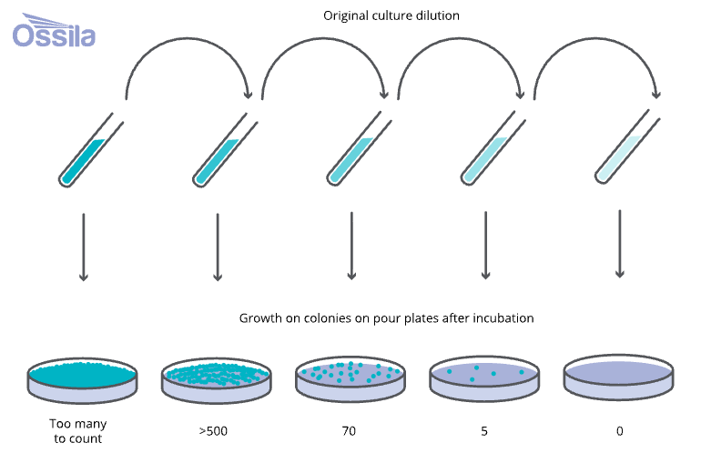
系列稀释与培养后平板菌落示意。图中数字保留原样，不能用作所有方法的计数限值。 图中主要文字：主要图中文字中译：Original culture dilution＝原始培养物的系列稀释；培养后平板上的菌落生长（原图英文措辞不规范）；Too many to count＝多不可计；其后依次标为>500、70、5、0。
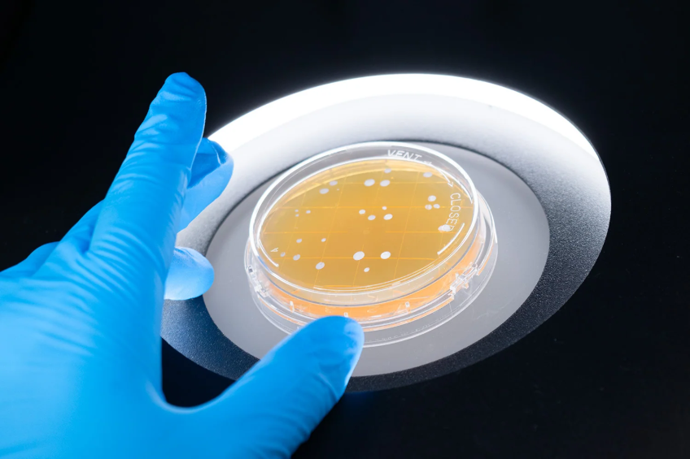
手套操作平板与照明底座的实景图，说明使用场景。画面未展示完整判读规则或结果导出。 图中主要文字：图片没有需要全文转写的正文标签；皿盖可见示例印字不作为样本身份说明。
操作与记录建议 操作建议涉及工作区、校准、计数方法与记录。
人工计数的组成 人工计数部分说明照明、放大、平板承载和计数探针。
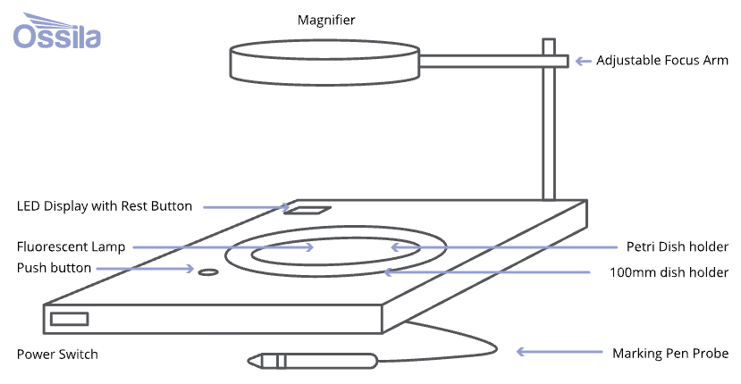
人工菌落计数器部件标注图。图内100 mm是这幅示意的标注，不是pun-ICON适配范围。 图中主要文字：图内标注中译：Magnifier＝放大镜；Adjustable Focus Arm＝可调焦支臂；LED Display with Rest Button＝带复位按钮的LED显示屏（原图Rest疑为Reset误写）；Petri Dish holder＝培养皿托架；Fluorescent Lamp＝荧光灯；Push button＝按钮；100mm dish holder＝100 mm培养皿托架；Power Switch＝电源开关；Marking Pen Probe＝计数标记笔探针。
自动计数的流程 自动计数通过照明、采图与图像分析完成；复杂对象可能仍需判断。
自动设备与电脑分析界面的照片，位于自动计数原理小节。它不是后面人工/自动比较表的同节功能截图。 图中主要文字：可读品牌名保留Ossila。电脑界面微字本次未逐字转写；画面只用于说明设备和电脑关系，不作软件功能逐项证明。
人工与自动方案的比较 比较表讨论速度、人员影响、费用、灵活性、记录与维护。
应用与进一步阅读 后文链接排错、形态资料、参考文献与作者信息。
2.4.2 Ossila菌落计数仪产品页 https://www.ossila.com/products/colony-counter
中文内容范围：逐节摘要；配图及主要标签保留原位置关系。
整理提纲 产品用途与外观 以预算友好的自动计数为定位，提供设备和软件。
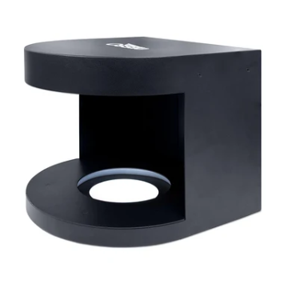
产品外观图；适合说明设备形态，不能证明计数性能。 规格与使用条件 列出平皿范围、成像、照明及电脑要求。参数为厂商主张，未独立验证。
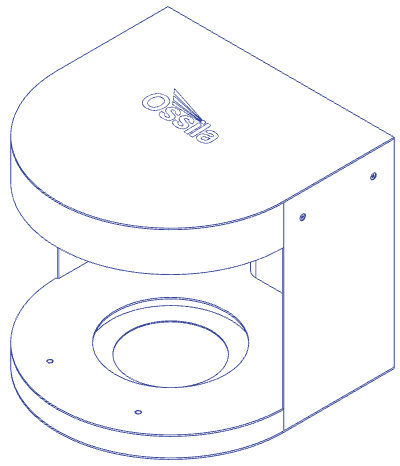
外形线图；本图没有尺寸标注，具体尺寸须读取规格表。 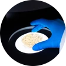
手持平皿的特写。画面不能单独证明适配直径范围。 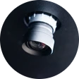
内部相机特写。画面不等于分辨率或最小目标的验证。 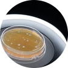
托位内平皿。没有同一样本重复测量数据。 人工复核与输出 软件支持增删、拆分及合并，提供配置保存与报告入口。
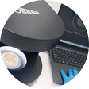
设备与电脑的缩小配图；无法看清拆分、合并等具体动作。 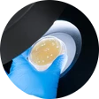
手持平皿照片；虽然原文放在报告功能旁，此图没有展示报告。 2.4.3 菌落计数排错 https://www.ossila.com/pages/issues-with-colony-counting
中文内容范围：逐节摘要；配图及主要标签保留原位置关系。
整理提纲 误差与困难对象 讨论重叠、边缘、气泡、杂质及背景对计数的干扰。
降低误差的处理 提出稀释、标准化判读与图像阈值等处理思路；具体采用需服从适用方法和实验室SOP。
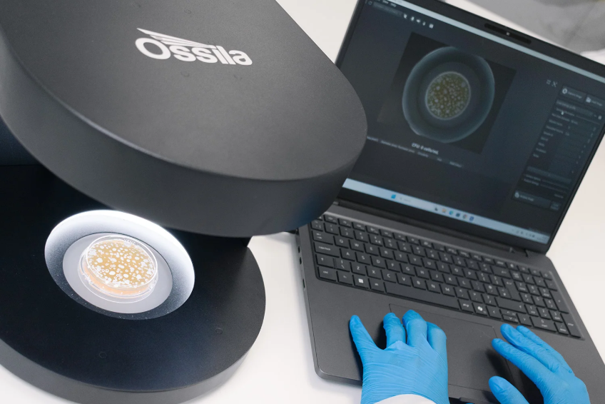
设备、平板和软件同框。此图说明使用环境，不证明文中所有建议有效。 设备与操作排错 分列计数、软件、校准及清洁问题，提供检查方向。
2.5 Molecular Devices CloneSelect应用与产品组（2篇／页） 本次按同类应用任务合并2页；未观察到应用文与产品页直接互链。属相邻细胞成像，不参与CFU直接排序。
本组阅读提纲 2.5.1 CloneSelect Imager在无标记成像中的多种应用 https://www.moleculardevices.com/en/assets/app-note/bpd/diverse-utility-of-cloneselect-imager-in-label-free-applications
中文内容范围：逐节摘要；配图及主要标签保留原位置关系。
整理提纲 六孔板集落计数 用杂交瘤样本说明成像、对象筛选与结果导出。
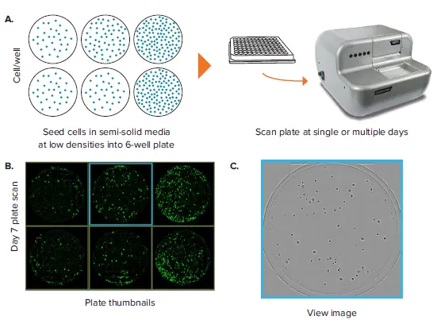
图1上半部分：六孔板样本进入成像流程，配整板缩略图和整孔图。 图中主要文字：Cell/well＝每孔细胞数；在半固体培养基中以低密度接种六孔板；在一天或多天扫描平板；Day 7 plate scan＝第7天平板扫描；Plate thumbnails＝平板缩略图；View image＝查看图像。
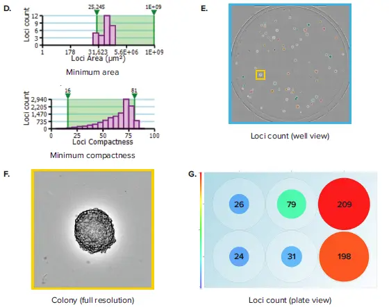
图1下半部分：对象筛选、局部细节与逐孔集落计数结果。 图中主要文字：Loci count＝对象数量（原文loci）；Loci Area(μm²)＝对象面积；Minimum area＝最小面积；Loci Compactness＝对象紧密度；Minimum compactness＝最小紧密度；well view＝单孔视图；Colony(full resolution)＝集落原始分辨率视图；plate view＝整板视图。图中数值为应用示例，不是CFU验收范围。
单克隆性评估 连接多个时间点，追溯指定细胞区域。
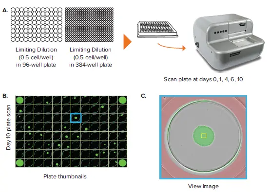
图2上半部分：微孔板中的单细胞培养与成像。 图中主要文字：Limiting Dilution(0.5 cell/well)＝有限稀释至平均0.5个细胞/孔；96孔板与384孔板；第0、1、4、6、10天扫描；第10天平板扫描、平板缩略图、查看图像。
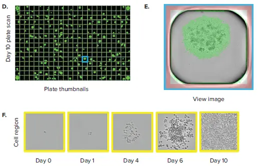
图2下半部分：同一区域的连续时间点记录。 图中主要文字：第10天平板扫描；平板缩略图；查看图像；Cell region＝细胞区域；Day 0/1/4/6/10＝第0/1/4/6/10天。
汇合度测量 展示微孔板细胞覆盖情况及生长记录。
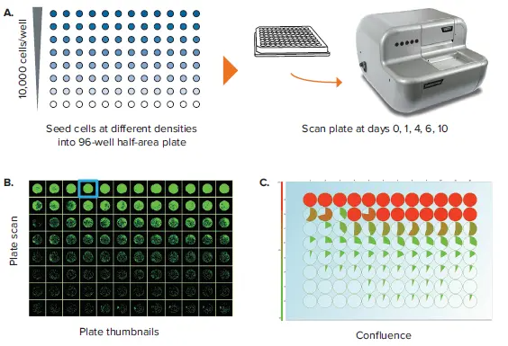
图3上半部分：不同接种量的微孔板与汇合度视图。 图中主要文字：不同密度细胞接种至96孔半面积板；图示10000 cells/well＝10000个细胞/孔；第0、1、4、6、10天扫描；Plate scan＝平板扫描；Plate thumbnails＝平板缩略图；Confluence＝细胞汇合度。
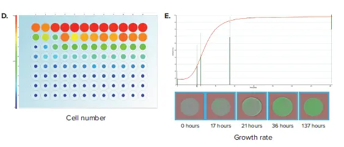
图3下半部分：细胞数量估计与生长曲线。 图中主要文字：Cell number＝细胞数量；Growth rate＝生长速率；0/17/21/36/137 hours＝0/17/21/36/137小时。图内不可辨的轴刻度未推读。
2.5.2 CloneSelect Imager与CSI FL产品页 https://www.moleculardevices.com/products/clone-screening/single-cell-cloning/cloneselect-imager
中文内容范围：逐节摘要；配图及主要标签保留原位置关系。
整理提纲 产品与功能 区分白光与荧光配置。
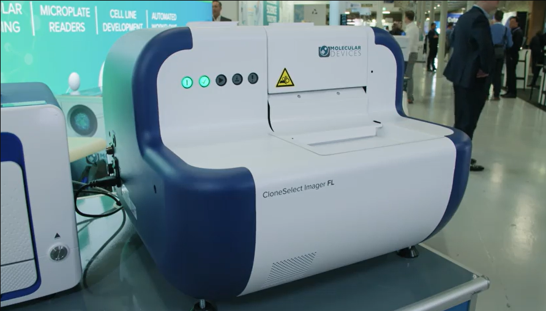
产品介绍视频封面，未播放。 图中主要文字：Product Presentation CSI FL＝CSI FL产品介绍；封面型号CloneSelect Imager FL保留，视频未播放。
视频仅为封面或入口，本轮未播放或取得字幕。
成像相关图 以下为原厂对应主题的实际图像，图中主要标签的中文见图后说明。
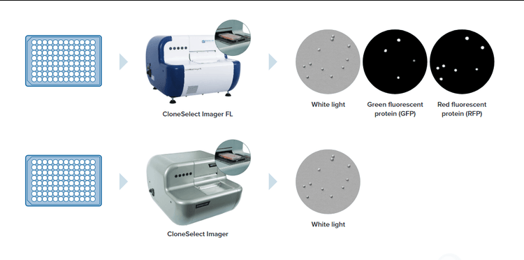
白光与荧光成像流程。 图中主要文字：White light＝白光；Green fluorescent protein(GFP)＝绿色荧光蛋白；Red fluorescent protein(RFP)＝红色荧光蛋白。CloneSelect Imager FL与CloneSelect Imager是原厂不同配置名称，保留型号。
分析相关图 以下为原厂对应主题的实际图像，图中主要标签的中文见图后说明。
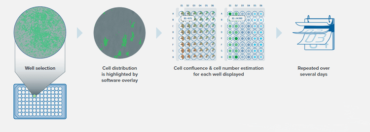
跨时间点的细胞分析。 图中主要文字：Well selection＝选择孔位；细胞分布通过软件叠加高亮；显示每孔汇合度与细胞数量估计；Repeated over several days＝在数天内重复观察。
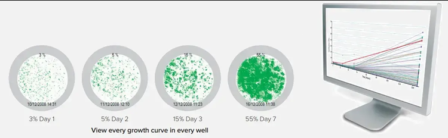
生长数据展示。 图中主要文字：View every growth curve in every well＝查看各孔的生长曲线；图示为第1天3%、第2天5%、第3天15%、第7天55%。百分比是该示例图内数值，不扩写为设备性能。
报告相关图 以下为原厂对应主题的实际图像，图中主要标签的中文见图后说明。
单克隆性验证示意。 图中主要文字：Single loci＝图示单个区域；White light＝白光；Fluorescence＝荧光；Day 0/3/9/11＝第0/3/9/11天；View image history of colony development＝查看集落形成的图像历史；Is colony monoclonal?＝该集落是否具有单克隆来源？Yes＝是（图示结论，不作为本次验证）。
报告样式示例。 图中主要文字：Monoclonality Report＝单克隆性报告；报告版面与逐时点图像是主要内容，缩小微字未逐字转写。
整孔观察。 图中主要文字：Monoclonal＝单克隆来源；Not Monoclonal＝非单克隆来源。图像用于哺乳细胞克隆来源示意，不泛化为微生物菌落鉴定。
连续时间点对照。 图中主要文字：Monoclonal＝单克隆来源；Day 0/1/2＝第0/1/2天，表示同一区域的连续观察。
整孔分区观察。 图中主要文字：All Region Export＝全部区域导出；Day 0/1/2＝第0/1/2天。
非细胞对象复核。 图中主要文字：Artifact Region Export＝伪影区域导出；Day 0/1/2＝第0/1/2天。
附件英文转述：完整中文整理 下列13段均对应用户工作簿N8–N20已提供的英文转述；逐段完整整理为中文，保留原单元格定位。它们不是来源文章全文。
附件 N8 IUL以已经考虑自动化的实验室为起点：先明确实验室希望减少哪些重复计数工作，再询问哪些设备特点能够满足需求，之后才展开各项选择标准。
原关键词（保留英文便于检索）：colony counter selection, automated colony counter, laboratory requirements
附件 N9 IUL分别讨论需要覆盖的平板、尺寸或形状限制、培养基差异，以及不同接种模式的兼容性。
原关键词（保留英文便于检索）：plate compatibility, Petri dish formats, culture media, plating methods
附件 N10 “覆盖所需平板类型”和“接纳平板形状与尺寸”是两个需要分别确认的兼容问题。
原关键词（保留英文便于检索）：plate size, plate format, Petri dish adapter, plate positioning
附件 N11 IUL按常见琼脂类型讨论背景差异，示例包括血琼脂、巧克力琼脂、营养琼脂、LB、麦康凯及显色琼脂。显色示例把可见颜色变化与酶反应相连，用来说明检查菌落与背景区分能力时应考虑的情境。
原关键词（保留英文便于检索）：agar colour, chromogenic agar, colony contrast, background discrimination
附件 N12 Ossila把困难分成不同图像原因：相接菌落可能被合并为一个对象；大小或形态变化增加识别难度；边缘菌落可能漏计；气泡或碎屑可能与菌落相似。
原关键词（保留英文便于检索）：touching colonies, colony clusters, edge colonies, counting artifacts
附件 N13 Singer把分辨率与对比度联系到菌落纹理和细节是否可见。相邻菌落需要足够图像细节才能区分；放大图片不能恢复采图时没有获得的信息。
原关键词（保留英文便于检索）：small colony detection, image resolution, image contrast, colony separation
附件 N14 Singer建议用实际菌落类型与实验条件，将自动流程结果和人工计数比较。菌落簇、杂屑可能需要人工干预或额外图像处理，还要考虑图像质量、阈值、大小和圆度设置。因此验证对象是完整方法，不只是一个软件输出。
原关键词（保留英文便于检索）：touching colony review, manual validation, clustered colonies, counting artifacts
附件 N15 IUL把光线扩散、阴影与反光、环境光防护，以及相机与镜头的清晰度作为不同成像项目分别检查。
原关键词（保留英文便于检索）：colony imaging, diffuse lighting, reflections, camera optics
附件 N16 Singer说明不均匀照明会改变平板不同位置上菌落的表观颜色与强度。比较对不同设备取得的图像使用相同ImageJ设置，展示算法设置没有改变时，阴影与亮部也会改变可供分析的信息。
原关键词（保留英文便于检索）：uniform illumination, shadows and reflections, ImageJ analysis, colony intensity
附件 N17 Singer分别检查颜色保真与过亮、饱和造成的细节丢失。可靠颜色有助于区分菌落并减少表型误读；过曝区域可能丢失有意义的差别，使基于阈值的分析把不同结构当成相同对象。
原关键词（保留英文便于检索）：colour fidelity, image saturation, overexposure, colony boundaries, image thresholding
附件 N18 Ossila比较表把记录处理纳入方法选择：人工方式依赖手写记录，追溯有限；自动系统可保留图像、元数据和数字导出。表中还比较成本、维护、通量、主观性及排错。实际优势仍需在采购方工作流程和样本上确认。
原关键词（保留英文便于检索）：result review, counting records, digital export, image metadata, traceability
附件 N19 IUL分别询问CSV或PDF输出、是否附图、报告定制、用户管理和审计追踪要求；它们是需要逐项确认的不同报告需求。
原关键词（保留英文便于检索）：CSV export, PDF report, plate images, audit trail, user management
附件 N20 KEYENCE按样本量、准确性需求、人员经验与资源、验证要求组织方法选择。小工作量可能人工可完成，批量增加时更应考虑自动化；培训、设备投入和可靠记录也要纳入评估。这些维度帮助定义测试，但并未给另一厂商现成的测试平板组或接受方案。
原关键词（保留英文便于检索）：colony counter evaluation, representative plates, validation requirements, sample volume, acceptance criteria
旧中文内容对照：保留原有六页整理 这些页面是此前已整理的中文站证据，供下面判断吸收、补充和链接使用。具体处理以40页逻辑表为准，不把旧站公开话术直接认作当前产品能力。
选择自动菌落计数仪时需要考虑的五大要素 https://www.punmicro.com/newsshow_168.html
检测需求与技术 按样本、培养基、工作量、图像识别和手动修正选型。
操作与记录 关注使用效率与记录要求。标题说五大要素，实际仅四个序号，存在结构矛盾。
[媒体待补：[待补图：原文在此引用自动菌落计数仪图片，但当前图片URL失效；请修复原图或提供已确认的高清产品图。不能把空白占位截图当作产品图。]。原图未取得或已失效。]
图中主要文字：仅能读到替代文字“自动菌落计数仪”，没有看到原产品图。
如何选择合适的自动菌落计数仪进行微生物检测？ https://www.punmicro.com/newsshow_184.html
任务与技术 先列样本、平板和通量，再讨论光源、算法、模式及附加任务。
使用与实测 包括校准、数据、维护支持及代表样本现场或寄样测试；这些属于购买检查项，不是当前型号均具备的功能证明。
[媒体待补：[待补图：原文在此引用自动菌落计数仪图片，但当前图片URL失效；请修复原图或提供已确认的高清产品图。不能把空白占位截图当作产品图。]。原图未取得或已失效。]
图中主要文字：仅能读到替代文字“自动菌落计数仪”，没有看到原产品图。
如何选择合适的自动菌落计数仪以满足实验需求? https://www.punmicro.com/newsshow_190.html
明确需求与工作量 从样本、分析、成像、通量、兼容和数据要求组织选型。
费用与支持 包含购置、安装、培训、耗材、维护、校准、升级和扩展成本，以及供应商服务。新稿在这方面更薄。
[媒体待补：[待补图：原文在此引用自动菌落计数仪图片，但当前图片URL失效；请修复原图或提供已确认的高清产品图。不能把空白占位截图当作产品图。]。原图未取得或已失效。]
图中主要文字：仅能读到替代文字“自动菌落计数仪”，没有看到原产品图。
菌落计数准确性的创新解决方案—从连续梯度稀释到智能自动计数 https://www.punmicro.com/newsshow_146.html
CFU与流程 把稀释和菌落计数放在同一检测流程，使用不同设备的配图。
连续稀释 介绍Inlabtec袋式稀释装置；品牌和任务应与本方计数设备分开说明。
菌落计数 介绍ICON及自动化连接设想。AI、杂质处理和速度等为企业宣传，未附本次可复算结果。
机械臂取放带菌落平板的照片，前景有多层承载位。原位在CFU解释之后、局限性标题之前；画面没有解释CFU形成原理，也不是对计数结果的验证。 图中主要文字：图片无必要正文标签。机械臂/承载位的具体系统型号与原件来源尚未从图中确认，不因照片出现就在新稿承诺自动进板功能。
袋式连续梯度稀释装置的上下两幅操作照片，蓝色液体浓淡不同。原文置于Inlabtec连续梯度稀释说明之后，应按该设备的品牌归属理解。 图中主要文字：Inlabtec品牌写法沿原文。图中未见可用于认定精度、稀释比或检测结果的数值；不补写任何性能数据。
蓝白色ICON整机与软件屏幕组合图，原位在菌落计数问题段之后、ICON解决方案段之前。适合说明整机与软件界面外观，不证明菌库、AI更新、杂质识别或速度。 图中主要文字：PUNMICRO/ICON名称保留。软件缩小微字未逐字转写，不能用来确认软件版本、结果字段或合规功能。
PUNMICRO标识的计数设备、机械臂和成组平板承载位系统图，位于定制说明后。画面可提示存在自动化系统方案，但型号、已交付配置及功能需另核。 图中主要文字：PUNMICRO品牌保留。图内没有足以核对流程、通量、板数或参数的说明；不从承载位数量推导处理量。
如何准确计数：自动菌落计数仪对不同类型菌落的处理算法 https://www.punmicro.com/newsshow_204.html
图像到计数 按采图、预处理、识别、计数说明算法。
困难对象与修正 讨论低对比、黏连、杂质及人工修正；缺少可复核样本与软件步骤，不能拿一般算法描述证明具体能力。
[媒体待补：[待补图：原文在此引用自动菌落计数仪图片，但当前图片URL失效；请修复原图或提供已确认的高清产品图。不能把空白占位截图当作产品图。]。原图未取得或已失效。]
图中主要文字：仅能读到替代文字“自动菌落计数仪”，没有看到原产品图。
ICON自动菌落计数仪 旧产品承接页 https://www.punmicro.com/productshow_30.html
产品与软件 展示设备、简化操作、AI计数和自动化扩展。页面宣传精度与速度，缺本轮可复算条件。
卖点与证据差距 98%与＞98%表述不一致；最快3秒、接口范围需要条件与原件支持。图片中的宣传数字同样不当作验证结果。
规格与适用范围 列板型、光源、修正与输出。相机栏原文写“2000像素”，不能擅改成2000万；最小分辨力等也须核对定义与版本。
现行产品页整机与软件主图。该URL可加载，与168/204等文章的失效旧图片URL不同；不能因此宣称文章图片已修复。 图中主要文字：PUNMICRO/ICON品牌保留。屏幕缩小微字未逐字转写，不能作为具体版本或功能逐项验证。
图内出现“准确率＞98%”宣传语，是站方自己的性能主张。截图没有样本量、条件、参考计数及误差定义，不能当作验证报告。 图中主要文字：主要图文原样：AI全皿菌落计数；彻底解决准确性难题，准确率＞98%。该绝对表述需产品/技术审核，未移入新稿作为已验证事实。
软件界面截图上叠加简易操作宣传语。背景可见部分记录和计数结果，不能据此推断效率或准确率已通过。 图中主要文字：主要图文：极简操作界面；无需设置繁琐预选参数，一键计数。背景界面微字未逐字处理；未把展示值作为测试数据。
机械臂与计数设备场景，叠加自动化及外部机械臂连接宣传。图像不足以核验所有机械臂兼容范围或无人值守流程。 图中主要文字：主要图文：全面自动化菌落计数；可任意连接外源机械手，实现无人值守。接口文档、适用配置及限制待确认。
六类样本或计数任务的横向拼图，按网页标注理解。照片与标注不能替代逐板型验证记录。 图中主要文字：由左至右标签：倾注/涂布法平皿计数；螺旋平皿计数；接触碟平皿计数；手套压印平皿计数；过滤膜平皿计数；荧光菌落分析（可选）。
支柱页逻辑：融入旧文，保留真正有用的内链 以本篇选型文章为主干：淡蓝框内容提炼后进入相应段落；绿色框保留独立任务，放在正文、旁注或推荐阅读。只是内容组织方案，本轮不执行删文、合并URL或重定向。
以选型文章为主干的内容融合与内链逻辑图。点击可查看原尺寸图。 采购检查并入主线：需求、板型、方法、试用、费用和供应商支持合并成一份清单；同题内容不相互堆链。（来源：CN-168、CN-184、CN-190）
把原理压成可检查的采图条件：用可见对象、对比度、光源和人工参考解释判断，不堆未确认算法术语。（来源：CN-166、CN-173、CN-199、CN-200）
困难对象清单与同板证据：提取气泡/杂质/黏连/细小对象，要求原图、初始标记与复核结果。（来源：CN-80、CN-204）
行业宣传改为代表样本要求：只纳入真实目标客户的代表样本，不把行业适用与性能口号当实验结果。（来源：CN-106、CN-136、CN-152、CN-216）
保留前处理分工，深入链146：稀释/培养/计数各设备品牌与责任分开，深入阅读统一用146。（来源：CN-110）
维护提醒去重，只留一个支持入口：吸收洁净度、光源状态、固定条件与维护记录；具体步骤/周期遵循型号手册，主推荐只链185。（来源：CN-127、CN-160、CN-161、CN-209、CN-215、CN-221）
人工转自动的收益变成试用指标：以完整周期、人工干预和复核投入支持价值，未测试的速度/成本不写结论。（来源：CN-76、CN-163、CN-197）
权限合规宣传改为受控核对项：版本、角色、原图关联、修改记录和实际文件分别确认，不能互相替代或自动等于法规符合。（来源：CN-70、CN-143）
通用操作改为本方连续演示：记录采图条件和复核动作，去盖/清洁/重复次数不直接照搬。（来源：CN-192）
环境应用分类融入样本输入：空气、水样、表面采样分开；更详细的水样边界由227承接。（来源：CN-194）
推荐阅读的逻辑位置（样式仅作演示） 菌落计数准确性的创新解决方案—从连续梯度稀释到智能自动计数：读者遇到密度/杂质差异时，先看上游制样与稀释，不只调整识别参数。
前处理会怎样影响可计数平板
SEO、GEO与定位：保留已取得的数据和模拟 下方保留此前14URL的UB词位、94行查询、既有AI样本、1009词内部英文测算、收录与点击条件模型。关键词浓度、样本措辞重合和条件点击不代替产品证据或上线结果。
内容与逻辑：看可执行性和证据，保留旧文长处 本方稿把“检查什么、保留什么、由谁补什么”写得更具体；目前仍缺原始试用和产品证明。旧站184有现场/寄样测试，190有生命周期费用与供应商支持，新稿不能概称全面胜出。
本次pun-ICON中文扩写稿 〔推断〕按平板→困难菌落→成像→复核留存→样本试用推进，要求读者检查实物、原图和文件；像素数、留图与审计追踪的边界写得较清楚。板型表、照明对照、真实试用整段仍待补，生命周期费用和售后覆盖弱于旧站190。
punmicro.com既有中文内容组 〔推断〕三篇选型文已覆盖需求、成像、工作量、数据和供应商；184有寄样/现场测试，190有全生命周期成本。168标题写五大要素，正文只列四项；204算法叙述通用，未呈现可复算的样本结果。146连到稀释与自动化流程，但部分图与所在段落任务不一致。
IUL选型 结合产品与板型说明 〔推断〕选型提问、SphereFlash产品配置、板型专题共同覆盖采购前问题与产品承接；软件版本表和适配器说明比单篇导言具体。选型文标题/H1不同，canonical指向产品，重复主题不能当三份独立成果叠加。
Singer计数指南 成像产品与工作流组 〔推断〕现代计数指南解释方案、限制与工作流，ColonyCam VOGUE承接成像和分析，成像技术文补图像原理。不是只比较原来的单篇图像文。正文可读，图片像素受403限制；相机/示例条件不同的图片不能直接当单变量试验。
DWS自动计数介绍与ProtoCOL产品组 〔推断〕109词左右的推广短文不能单独代表其内容深度；需一起看ProtoCOL3 Plus产品页。两页语句重叠高，产品页通过规格、选件、下载和视频入口承担购买任务。空FAQ标签不等于已有答案。
Ossila方法 排障与计数产品组 〔推断〕方法文解决计数与人工/自动方案，排错页解释干扰和故障，产品页提供规格、软件及报告入口。组合覆盖使用前后任务；计数范围在知识文不同位置有不一致，产品报告旁用手持皿照片，均不能直接当标准或报告证据。
Molecular Devices CloneSelect应用与产品组 〔推断〕应用文用细胞样本图与分析结果组织，产品支柱覆盖白光/荧光、成像、分析、记录与克隆工作流。两页内容更适合借鉴证据组织；哺乳细胞集落、单克隆性与微生物平板CFU不同，12项直接选型覆盖标N/A。
具体用户问句、竞品内容覆盖与本方严格模拟已在新版SEO问题映射 逐项列出。本节继续保留原中文稿与竞品源文的正文统计；新增内部英文底稿另在本方模拟节计算。
逐页净正文、结构与媒体 正文分母排除标题、图注、导航、推广CTA和绿色待补。中文列汉字，英文列正则词数，二者不横向比较长度。列表另列；Singer只有网页行块，真实段落数为N/A。正文表格单元格另作证据，不混入叙述词分母。
本次pun-ICON中文扩写稿：去重后的正文范围 按规范化的相同段落或列表项去重，不把同义换写当作重复，不等于全网原创程度。
punmicro.com既有中文内容组：去重后的正文范围 按规范化的相同段落或列表项去重，不把同义换写当作重复，不等于全网原创程度。
IUL选型 结合产品与板型说明：去重后的正文范围 按规范化的相同段落或列表项去重，不把同义换写当作重复，不等于全网原创程度。
Singer计数指南 成像产品与工作流组：去重后的正文范围 按规范化的相同段落或列表项去重，不把同义换写当作重复，不等于全网原创程度。
DWS自动计数介绍与ProtoCOL产品组：去重后的正文范围 按规范化的相同段落或列表项去重，不把同义换写当作重复，不等于全网原创程度。
Ossila方法 排障与计数产品组：去重后的正文范围 按规范化的相同段落或列表项去重，不把同义换写当作重复，不等于全网原创程度。
Molecular Devices CloneSelect应用与产品组：去重后的正文范围 按规范化的相同段落或列表项去重，不把同义换写当作重复，不等于全网原创程度。
原创程度需要拆成四种不同检查 样本内5词片段重合（仅措辞层） Jaccard=共享不同5词片段数÷两文不同片段并集；包含度以各自片段数为分母。只覆盖本次取得的英文叙述正文，不提供全网原创率。
SEO：竞品用UB查占位，本方做发布前模拟 本节分成两套口径：竞品以Ubersuggest实际返回的关键词、记录位置和月自然访问估计为依据；punmicrogroup新稿以内容、关键词、证据和发布条件做模拟。另读GSC建立本站现状。竞争页真实点击未取得，UB流量不当作点击实绩。
竞品词位与流量 · 回答哪些问题 · 本方浓度与原创证据 · 收录评估 · 点击情景
竞品：14页均调用UB，逐词展示94行返回 采集日2026-11-06，美国英语，实时解析locId=2840。page_overview和page_keywords均逐页读取，关键词limit=100。位置和词量是供应商缓存，记录日期见每行；接口未给设备拆分。空返回写未知，不能当0。
先看任务相关的占位，再看流量大小 实测：Ossila知识页的优势主要体现为方法与基础概念查询。65个样本词中，5个属于设备选择/采购，30个为方法、26个为微生物背景、4个为软件/替代工具。65不是65个采购词，更不是65条合格线索。
实测：Singer主指南估计15次/月的页面访问对应了不相关查询；MD产品页也返回microwave imager、body imager等宽泛或无关词。因此“有流量”与“回答本篇客户问题”必须分别判断。
DWS短文已有automatic colony counter第30位、automated colony counter第17位的记录；本方可以研究对应品类意图，但这不构成本方可获得相同排名的证据。
IUL · 3页：查看全部返回关键词与记录日期 仅本次返回查询样本去重；overview与keyword明细范围不一致/缺行，不能叫全组全量；相关包括方法/背景，不等于采购词。页面流量不同期且查询可重叠，未加总。
未取得关键词明细的URL：IUL、IUL-PRODUCT；概览非零和明细空的冲突保留，不补造查询。
Singer · 4页：查看全部返回关键词与记录日期 仅本次返回查询样本去重；overview与keyword明细范围不一致/缺行，不能叫全组全量；相关包括方法/背景，不等于采购词。页面流量不同期且查询可重叠，未加总。
未取得关键词明细的URL：SINGER；概览非零和明细空的冲突保留，不补造查询。
Ossila · 3页：查看全部返回关键词与记录日期 仅本次返回查询样本去重；overview与keyword明细范围不一致/缺行，不能叫全组全量；相关包括方法/背景，不等于采购词。页面流量不同期且查询可重叠，未加总。
未取得关键词明细的URL：OSSILA-PRODUCT；概览非零和明细空的冲突保留，不补造查询。
DWS · 2页：查看全部返回关键词与记录日期 仅本次返回查询样本去重；overview与keyword明细范围不一致/缺行，不能叫全组全量；相关包括方法/背景，不等于采购词。页面流量不同期且查询可重叠，未加总。
未取得关键词明细的URL：DWS-PROTOCOL；概览非零和明细空的冲突保留，不补造查询。
MD · 2页（相邻）：查看全部返回关键词与记录日期 仅本次返回查询样本去重；overview与keyword明细范围不一致/缺行，不能叫全组全量；相关包括方法/背景，不等于采购词。页面流量不同期且查询可重叠，未加总。
未取得关键词明细的URL：MD-CLONESELECT；概览非零和明细空的冲突保留，不补造查询。
页面、近义查询和不同广告情景不相加为组总流量。Ossila65行已返回moreAvailable=false，但概览71词仍少6条；接口当前暴露参数没有下一页previousKey，不能把缺口藏掉。
内容分别回答哪些搜索和AI问题 以下12问是从客户任务与所采文章推导的内容问题，不冒称UB有对应搜索量或已在AI答案中出现。0＝本次内容未见，1＝提及，2＝有解释或行动方法；这是内容覆盖，非排名分。实际搜索词位在上表，AI实际样本在GEO节。
Q01：实验室平板量增加时，如何判断自动计数方案的吞吐和完整工作流程是否合适？ 对应英文检索问句：How do I choose an automated colony counter for my laboratory workload?
AI回答应包含：日常样本量及变化；放板、采图、复核、导出全过程；人工、辅助与自动方案的取舍；同条件完整周期和人工投入
Q02：培养皿直径放得下，是否就代表仪器能稳定拍全并完成计数？ 对应英文检索问句：Which Petri dish sizes and plate formats can an automatic colony counter handle?
AI回答应包含：直径、形状、材质和托盘；稳定定位和完整入镜；皿壁、盖和标签遮挡；已验证与不支持的组合
Q03：培养基颜色、背景和接种方法不同，试用时应怎样检查计数适用性？ 对应英文检索问句：How do agar color and plating methods affect automated colony counting?
AI回答应包含：载体、培养基、接种法分类；低对比和复杂背景样本；样本身份与人工判读；原图与标记的一致性
Q04：相机像素越高，就能可靠数出越小的菌落吗？ 对应英文检索问句：Does camera resolution determine the smallest colony an automated counter can count?
AI回答应包含：像素与视野/对焦/对比度的关系；最小对象的实测尺度；全板与局部原图；人工参考和测试条件
Q05：黏连、边缘菌落、气泡和杂质怎样造成漏计或误计，应该如何核对？ 对应英文检索问句：How can I check overlapping colonies, edge effects and artifacts in automated colony counting?
AI回答应包含：困难对象分类；原图、标记与人工判断对照；目标/非目标判据；适用方法及争议处理
Q06：怎样判断照明不均、反光或皿盖遮挡是否影响了计数？ 对应英文检索问句：How do lighting uniformity and reflections affect automatic colony counting?
AI回答应包含：光源位置、覆盖和距离；目标区域的亮斑与暗区；同板、同条件对照；适用限制
Q07：自动曝光和颜色变化会不会隐藏细小目标或改变菌落边界？ 对应英文检索问句：Can exposure and color changes affect colony boundaries and automated counting?
AI回答应包含：细小目标、黏连边界和低对比；原始数据与显示效果；自动调节及人工覆盖范围；同板参数记录
Q08：自动结果不正确时，软件能怎样人工修正，修改前后能否比较？ 对应英文检索问句：How can users manually review and correct automated colony counts?
AI回答应包含：初始计数与修改后计数；增删/拆分等实际动作；修改原因和对应图像；角色与权限边界
Q09：保存图像是否等于可追溯，如何核对原图、结果、操作者与修改记录？ 对应英文检索问句：What records and audit trail should a colony counter retain?
AI回答应包含：样本ID与原始/标记/复核图关联；保存时机、原始版本和检索；操作者、时间和修改原因；权限与审计追踪分别核对
Q10：菌落计数仪能导出哪些报告与数据，怎样确认可用于实验室交接？ 对应英文检索问句：Which reports and data formats can a colony counter export?
AI回答应包含：实际格式及扩展名；样本、计数、原图和标记是否一致；复核字段和可读性；接口需要另行确认
Q11：采购前怎样用自己的常规与困难样本测试计数准确性和复核负担？ 对应英文检索问句：How should a laboratory validate an automatic colony counter with its own samples?
AI回答应包含：常规、困难与准备样本分组；约定人工参考及分歧处理；预先确认接受条件；保留正常和差异结果及完整周期
Q12：除购机价外，还应比较哪些占地、培训、耗材、校准和维护成本？ 对应英文检索问句：What is the total cost of ownership of an automatic colony counter?
AI回答应包含：购置与安装、电脑配置；耗材/培训/维护/校准/升级；占地与工作流调整；服务响应、备件和长期支持
MD两页讨论哺乳细胞成像、单克隆性与汇合度，直接CFU的12题不适用。其应用证据呈现可借鉴，不能因CFU词少给它低分。
本方：在可复核输入上模拟浓度和原创证据 原中文稿黑色正文1671汉字，仍有16处细节和3处整段需求。为模拟美国英语表达，另用这23段黑色正文做内部译写，得到13节、1009英文词的测算底稿。该底稿未发布，产品断言仍标待确认；正式英文稿定稿后需重算。标题、图注、绿色需求均不进入分母。
每千词次数＝出现次数÷1009×1000；词位覆盖率＝次数×短语按同一正则拆分的词数÷1009×100%。automatic colony counter在正文1次，对应0.991次/千词、词位覆盖率0.297%。短语之间可嵌套，不能把覆盖率相加。
编辑判断：主题清楚，但正文更多使用instrument、image和品牌名；正式英文编辑可在板型适配、软件复核和报告段落把对象写具体。不会为了把浓度凑到某个百分比而机械重复。automated拼法0次不等于没有自动计数主题；Google没有本报告可据以采用的“最佳密度”。
原创度拆成措辞、方法、材料和结果 从“提供检查方法”到“直接回答采购问题”还有差距 旧12题动作覆盖11/12只说明通用检查方法；当前问题按买家具体答案严格审阅，只有Q04形成相对完整的通用回答，其余需要型号、条件、实例或采购材料。两种统计的对象不同，不互相替代。
关键词应占哪一层页面 这些词量是接口当前返回的缓存：部分停在2025-11/12或2026-04/07，不能称2026-11实时需求。SD是供应商竞争难度，不是本稿会到达某一排名的概率；近义词量不累加。
收录：当前路由未发布，未来条件需单独模拟 实测：目标/products/automatic-colony-counters/的www与non-www最终均为404，URL Inspection均返回“URL is unknown to Google”。这说明目标尚未以本稿上线，不能据此给文案质量扣分，也不能把它当已收录页面。non-www首页已收录只证明首页历史，不代表新产品页的收录概率。
模拟起点T0：正式英文或对应语言内容公开，最终HTTP200、可抓取、没有阻止收录指令、规范主机与canonical明确。于T0后28/90天分别观察Google是否采用预定规范URL并索引。今天的本地HTML生成日不算T0。
收录概率暂不报百分比：目前没有本站同类新页“发布日期—发现—抓取—索引”的历史队列；关键词浓度、样本措辞重合或首页索引状态不能替代校准。给出的是技术/内容条件与缺口，正式上线后再以真实观测更新。
GSC基线有真实点击，但样本不足以校准新稿 请求2026-08-08至2026-11-05；实际返回46个日期行，2026-09-19至2026-11-03。只返回一条可见查询“se puede reciclar”，与菌落计数采购不相关。无相关新页曝光/CTR样本，不能把全站21.21%乘以搜索量来预测新稿。未返回日期未补零。
点击：给出可重算的排名条件情景 这里使用Ubersuggest estimate_serp_clicks计算器，输入本次keyword_overview返回的月量、假设自然排名与是否有广告。位置是情景设定，不是预测已经达到的排名；有/无广告只是两个模型输入，不是置信区间，未校准AI摘要等全部SERP影响。
单位：该单词的模型点击/月，小于1表示模型期望值，不是实际发生了小数次点击。每个词独立看，不把同义词、广告两个情景或页面流量相加。尚未收录、没有相应查询展示或达不到设定位置时，实际可能为0。
选择一个条件，查看该词的模型值 前提：正式页面已收录，并达到所选自然排名。此控件不预测本站能否达到该排名。
关键词automatic colony counter colony counter automated colony counter automated colony counting colony counter software 假设排名第20位 第10位 第5位 第3位 第1位 广告情景有广告 无广告
模型值加载中
仅切换已取得的50个UB模型返回值；不联网计算，不是收录概率或无条件点击预测。
本方当前可执行判断：先完成产品证据与正式英文、发布200与canonical、内链/资料承接，再观测T0后的收录和相关查询。对automatic colony counter（月量输入210），已收录且假设第10位时模型约2.3次/月，假设第3位时约16.6–20.4次/月；不能写成上线后保证获得的月流量。
当前使用的Google官方依据 Google搜索技术最低要求 ：Googlebot可访问、HTTP200和可索引正文只是资格；满足要求仍不保证收录。
URL Inspection API ：返回Google索引版本状态，不能用此API测试实时URL可索引性。
Search Analytics query API ：按维度读取；日期用PT；无数据日期可不返回；API可能只返回顶行。
Performance报表数据差异 ：匿名查询、聚合与截断可能导致查询表与总量不同。
Performance报表聚合口径 ：页面维度按URL聚合，日期、国家、查询等按property聚合。
正式CORE-EEAT仍为NOT_SCORED；发布前产品证据判决仍UNDECIDED。本节的具体计数、条件模型和编辑判断分别标明，不提供Google质量分或未经校准的收录率。
GEO：既有AI样本、内容回答能力和网页引用分开 本轮已读取Ubersuggest既有AI跟踪报告，未新增问题或修改配置。请求窗口2026-10-07至2026-11-05，美国英语；全provider与显式OpenAI返回一致，共14题、28个答案样本，实际只有OpenAI数据。
这两题问“哪些值得买、专业人士推荐哪些品牌”。现稿能提供选择标准和验证办法；缺少同条件比较、公开客户与成本证据，尚不能证明pun-ICON最优或最受推荐。文章回答某个问题，不等于AI已用它回答。
〔实测〕IUL SphereFlash出现在自动菌落计数仪购买问题AI-P01的品牌列表，IUL出现在品牌比较AI-P02。 没有返回答案正文或引用URL，无法判定选中的IUL文章或产品页被引用，也不能从brands_found推算每品牌每题出现几次。
〔实测〕Don Whitley Scientific的全局概览有4次提及；在当前可见逐题品牌列表中，名称只出现在厌氧工作站问题。 逐题没有每品牌计数，且部分其他问题省略低频品牌，因此不把4次全部精确分配到具体问题，更不能归因给本篇ProtoCOL两页内容组。Synbiosis/ProtoCOL是另一个被识别实体，不能合并成DWS网站引用。
〔实测〕Ossila的全局概览有2次提及；在当前可见逐题品牌列表中，名称出现在自动涂覆设备问题，没有在本次两道直接菌落计数问题中出现。 不能用这2次证明Ossila菌落计数文章AI表现。
〔实测〕Singer与Molecular Devices未出现在本次两道直接问题返回的品牌列表；总体品牌概览仅显示top25并省略44个低提及品牌。 不据top25缺名给其全平台AI可见度写0。
〔推断〕现有14题只有2题直接对应本篇，3题为计数工作站相邻任务，另有厌氧/整套临床自动化与涂覆问题。 需要建立与实际客户的板型、曝光、复核、验证和文件交接相对应的问题组，之后才能检验新稿作用；本轮未修改配置。
查看全部14个既有问题及范围 含厌氧、整套自动化及涂覆/药片包衣等范围外问题。没有为本任务改配置；不把跨品类提及归因给选定文章。
把本篇的答案准备成可核查材料 具体12问及各页证据见上方问题映射。建议优先补板型矩阵、困难样本全图和局部、同板曝光对照、初始/人工复核结果和实际导出文件；每项绑定样本、型号、版本和方法。先有可核查答案，再用固定问题面板复测是否出现品牌与真实引用URL。
当前0识别提及是既有基线；新稿是否改变AI回答须上线后另测，不能从文章长度、schema、关键词浓度或低措辞重合推导引用率。
市场定位：从客户任务和证据比较购买理由 采用Porter价值主张中的客户、需求和相对价格，并检查支持活动与取舍；用Jobs to Be Done补问具体情境和客户希望取得的进展。这些是分析框架，不是评分算法。网页能显示公开承诺，无法单独证明企业有独有且可持续的市场优势。
本次pun-ICON中文扩写稿 〔推断〕候选客户为有困难平板、需多人复核和交接的实验室。候选价值是减少争议判读与交接负担；目前只有需求和流程，尚无同板人工干预次数、复核时间及成本证据。属于待验证定位。
punmicro.com既有中文内容组 〔推断〕旧内容同时面向食品、水、医药与研发等广泛应用，多是通用购买要求。146体现稀释到计数的流程思路，但品牌归属、整套交付责任、接口与客户结果须逐项证明。不能从组合照片推定完整系统能力。
IUL选型 结合产品与板型说明 〔推断〕公开卖点围绕受控成像、板型适配、软件层级和验证资料组织。软硬件及验证资料形成可理解的购买理由；性能主张仍须相同样本和条件核验，不能从页面判断市场独有性。
Singer计数指南 成像产品与工作流组 〔推断〕计数、成像及表型用途组合，面向需要图像质量与分析灵活性的研究任务。与单一CFU例行质控的采购工作有交集，也有差别；需按客户的任务而非产品名判断替代关系。
DWS自动计数介绍与ProtoCOL产品组 〔推断〕计数与抑菌圈读取组合，按配置与可选模块解释用途；需求若包括抑菌圈，替代集合会变化。这里比较的是所选ProtoCOL链路，AutoCOL另有产品页，不能声称DWS全产品范围已查完。
Ossila方法 排障与计数产品组 〔推断〕产品公开强调预算友好的自动计数、附带软件和可调控制，面向希望降低日常计数负担的实验室。本轮没有可比总拥有成本，不能把其低价话术或本方人工复核宣称为已证实市场优势。
Molecular Devices CloneSelect应用与产品组 〔推断〕主要解决细胞克隆流程中的成像与证据记录任务，购买者与支付理由有别。作为相邻类别比较呈现方式，不列入本方CFU计数产品直接胜负排序；QPix挑菌也未硬塞入本组。
〔假设〕本方可以优先验证“处理困难平板后的争议判读与交接负担”。需要同板记录人工干预、复核时间、完整周期、结果差异及培训/维护成本，再判断是否构成客户愿意选择的理由。自动曝光、留图、人工复核、导出和AI标签都不足以单独证明独有性。
素材是否正确，以及正式上传该用什么文件名 现有设备/软件图可作概览；图中型号和版本需确认。六张平板是六个源图，不把重复粘贴计成18份素材。小图可以讨论外观，不能证明培养基身份、最小尺寸、识别精度或标准符合。
竞品媒体呈现中值得吸收和避免的做法 网页素材按最终用途导出清晰的WebP/PNG，保存原件。文件名用真实内容的短描述；型号未确认先用pun-icon系列名。alt描述画面和操作，不堆关键词，不把待证性能写成图片事实；型号、样本、版本和采图条件放在相邻图注。
六张平板单图命名建议 身份未确认前用中性编号；确认培养基与画面类型后再改成准确描述。现有333–359px原图不经放大冒充高清。
依据、审核状态与落地顺序 正式CORE-EEAT=NOT_SCORED：缺正式评分运行时。PRIME发布判决=UNDECIDED：关键型号、功能原件、技术审核和试用证据未齐；不填五维或加权总分掩盖未知。以上为人工编辑与证据诊断，不是Google、AI平台或市场的评分。
主稿H8–H20来源为下载文件的黄色作者文字；原文件保留未修改。2000万像素、自动曝光、留图/权限和输出格式有作者来源，仍需研发与产品审核才可公开。附件事实、旧官网主张、竞品主张、工具估计与编辑推断分别保留。
技术二次审阅仅为AI编辑检查，参与者曾参与扩写，不能代替工程师、实验室或法规审核。当前稿仅供内部填写。GB 4789.2—2022范围及片状/链状条款已核对，正文采用实际适用方法与SOP，不扩成所有样本的统一计数规则。
政府网站公开的GB 4789.2—2022 PDF
Google：以人为本的内容 ：用于判断信息增量、第一手经验、来源和作者责任。
Google：图片搜索建议 ：描述性文件名、alt、清晰图像与附近相关文字；文件名不能代替内容。
Google：AI搜索功能优化说明 ：基础SEO与有价值的独特内容仍重要；没有保证被引用的专用技巧。
Google：垃圾内容政策 ：避免脱离用户任务重复堆词；本报告不设最佳关键词密度。
哈佛商学院ISC：独特价值主张 ：按客户、需求、相对价格比较定位；不是靠几个共同功能判独有。
哈佛商学院ISC：成功战略 ：补查活动、取舍和相互支持；仅凭网页无法确认企业战略优势。
Christensen Institute：Jobs to Be Done ：按具体情境与客户要取得的进展理解购买，而非只按仪器类别。
采集来源均为公开页面与本地用户文件。Singer图片403、四篇中文旧文共用图404已明示；未播放任何竞品视频。本HTML以嵌入图片离线阅读，原文链接仍需联网。此前SEO测算未输出Word或写飞书；本培训版本另行同步飞书与独立GitHub阅读页，生产站未修改。
最后简表：竞品观测与本方模拟使用不同口径 竞品流量和关键词位置来自UB；本方为未发布稿的输入测量与条件模型。没有把两者混成统一排名分、全网原创率、收录概率或保证点击量。
本页为内部培训与协作材料。淡蓝表示下轮融合建议，绿色框表示独立内容链接，绿色文字是待补资料。八周计划上架与上传流程另行讨论。公开阅读页不等于生产产品页或搜索效果。